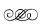
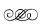

1. BÖLÜM
1. BÖLÜM
1. Deniz...
Köye geldiğinden beri bu tarlayı üçüncü temizlemesiydi, köklerine dikkat etmeden kopardığı yabani otların bir hafta içinde aynı yerde yine biteceğini biliyordu artık. Yalın ayak çalışmaktan kurumuş, çatlamış çıplak ayaklarına baktı, ne kadar köksüzdü. Bildiği hayattan geriye hiçbir şey kalmamıştı, var olmasına neden olan her şey yok olmuş, artık sadece anlamsızlık vardı.
Hissettiği duyguya isim takamıyordu. Buraya geldikten aylar sonra, durumuna teşhis koyabilecek ayıklığa ancak gelebilmişti. Ayıklığını kaybetmesi ilk defa uyuşturucudan değildi. Bu sefer önce ruhunu, sonra bedenini ele geçiren bu şey, vücudunun ürettiği bu şey, herhangi bir uyuşturucudan bile daha güçlü, daha uzun etkili bir kimyasaldı: Acı.
Duru’nun, Can Manay’ın helikopterinden inişini gördüğü o televizyon mağazasının vitrininde Can Manay’ın Duru’yu kollarına alıp öptüğü o anda doğmuştu bu acı ve arsızca içinde ne duygu varsa yutmuş, şimdi kocaman olmuştu. Öyle büyüktü ki sanki Deniz’in evreniydi. Artık, ancak acının içinde var olabilen biriydi o. Ruhu ağrıyordu.
Ülkenin güneybatısında bir köyde, karın tokluğuna çalışan, önüne konulursa yiyen, konulmazsa sormayan, işi olmadığında dalıp dalıp giden, şaşılacak kadar az uyuyan, uzun boylu, geniş omuzlu, suratındaki kıllardan yakışıklılığı pek bilinmese de gözlerinin güzelliği köylüler arasında dillendirilmiş bir işçiden başka bir şey değildi artık. Dikkatle çektiği o yabani otlar gibi, dikkatle çekilip çıkarılmıştı kendi toprağından.
Şehirden ayrılışı, daha doğrusu kovulması tam bir insanlık dramıydı aslında ama Deniz o kadar yaralıydı ki kendi dramını kavrayabilecek algısı bile kalmamıştı. Duru’yu aramakla geçen 29 saatte dört ayrı karakola gitmiş, Can Manay dahil tanıdığı herkesten yardım istemiş, Can Manay’a ulaşamamasından şüphelenmeden Duru’yu her yerde aramıştı. 29 saat boyunca içinde hissettiği azap, dördüncü kez gittiği karakoldan çıkışta, önünden geçtiği bir elektronik mağazasının satılık televizyonlarından bazılarında Duru’yu görene kadar kendi çaresizliğine çare bulabileceğini sanmıştı. O magazin programının görüntüleri, Duru’yu nihayet bulmanın hissiyle çaresizliğini bir an dindirmiş, sonraysa ruhunu parçalamıştı. Hissedilen çaresizliğin ruhu parçalayan bir umutsuzluğa dönüşmesi var olan tüm anlamları yok ederken damarlarındaki kan acıyla beslenmeye başlamıştı. Kendi uydusu tarafından parçalanmış bir gezegendi o, hayat yoktu ama hâlâ yörüngedeydi. O an artık acı yok, sadece anlamsızlık vardı.
Duru nasıl yapmıştı böyle bir şeyi? Neden? Niye?
Oraya nasıl gittiğini, içeri nasıl girdiğini bilmiyordu ama Can Manay’ın ofisinde etrafa saldırdığını hatırlıyordu. Kıskançlığın değil, hayal kırıklığın saldırışıydı bu. Belki de ölebilirdi, Can Manay’ın “ricasıyla” alındığı karakolun o hücresinde geçen üç gün olmasa... O hücre Deniz’in ölmesini engelledi ama onu sessizce bitirdi. Nezarethaneden çıktığındaysa üç gün önce sahip olduğunu sandığı hayattan geriye hiçbir şey kalmamıştı. Müzik gitmişti.
Anlamsızlık bedeninden taşıp tüm algısını doldurduğunda artık o sadece bir posaydı. Bir zamanlar, varoluşu tüm coşkusuyla hissettiği bu bedende nefes almaya, yemeye, uyuyabildiği anlarda uyumaya devam eden bir posa. İlk defa müzik duymuyordu, tek bir nota bile yoktu. İçinde her şey solmuştu.
İçindeki boşluğun bir gün dünyayı değiştirecek bir şeye gebe olacağını bilmeden kızgın güneşin altında ince, uzun müzisyen parmakları, toprağın bereketini kutlarcasına çıkmış yabani otları tek tek yolmaya devam ederken aklında tek bir düşünce vardı: Yalın ayak çalışmaktan dolayı kaynaklanan lanet olası yara daha ne kadar acıyabilirdi?
2. Can & Duru
Can, suratına yayılan mutluluğun tuhaf görüntüsünü umursamadan kafasını yasladı koltuğa. İşe gitmek üzere yoldaydı. Aracının lüks deri koltukları hissettiği bu duyguya yatak olmuşçasına kendini bıraktı. Gözleri, önünde uzanan yoldaydı ama aklı sadece Duru’da. Gözlerini de kapatıp beynine akan anlamsız görüntüleri kesti çünkü artık bu evrende sadece Duru vardı sanki. Duru’nun gülümsemesinin aralığında beliren güzel dişlerinin şekli, o gülümsemeyle şekillenen yanağındaki çıkıntı, güneş ışığıyla renk değiştiren saçları, şaşırdığında suratına, özellikle de gözlerinin içine yayılan ifade, o gözlerin orgazm yaşarkenki kısıklıkları, o gülümseyen ağzın sevişirkenki dolgun pembeliği, o pembeliği emmenin lezzeti, o beyaz tene ancak dokunulduğunda hissedilen pürüzsüzlükteki haz, o avuca sığmayacak büyüklükte dolgun ama büyük olmayan memelerin küçük, sivri uçlarının tahriki... Ona dokunabilmek, öpebilmek, etini avuçlayabilmek, içine girebilmek, hazla kıvranan vücudunu seyredebilmek... Can neredeyse boşalmak üzereydi! Erkekliğinin sertliği öyle bir gerginlik vermişti ki, Ali’ye hemen eve geri dönmeleri gerektiğini telaşla haykırdı. Can’ın buyurmasıyla yolun ortasında aniden durmak zorunda kalan Ali, etrafındaki araçların küfürlü kornasına aldırış etmeden hemen arabayı döndürdü. Can’ın unuttuğu şeyin çok önemli olduğunun bilincinde bir saniye bile kaybetmeden araçları sollayarak malikâneye geri döndüler. Can Manay’ın polis merkezindeki tanıdıkları sayesinde paparazzileri uzaklaştırmak için verilen polis ekibinin yanından hızla geçerken elini kaldırarak her şeyin yolunda olduğunu işaret etmek zorunda hissetti Ali, daha önce hiç bu kadar acele etmemişti. Acele etmesinin çok önemli olduğunu, Can’ın unuttuğu şeye ulaşmasının acil olduğunu düşünerek vardı eve.
Can, arabadan inmeden çıkardığı ceketiyle ereksiyonunu gizleyerek fırladı araçtan, güvenliği hızla geçip kapıya vardı, içeri girer girmez durmaksızın ayakkabılarını fırlattı, salona çıkan merdivenlerde kravattan kurtuldu, yatak odasına uzanan koridorda gömleğin düğmelerini yırtarcasına açtı. Duru’nun evde olduğunu, çıkmadığını biliyordu, emindi, çünkü kokusunu alıyordu. Yatak odasının kapısı aralıktı ve Can içindeki coşkuyu kontrol altına alarak yavaşça açtı kapıyı.
Duru, Can’ın ısrarıyla girdiği küvette gecenin tüm yorgunluğunu atarken kapıda dikilen Can’ı görünce şaşırmadı bile. Yarı çıplak, erekte, istekli, âşık Can Manay.
Can kendisine doğru huzurlu adımlar atarken Duru sakince kalktı küvetten, üzerinden akan suyun Can’ı çıldırtacağını bilerek. Bir kadını en tahrik eden şey erkeğin üzerinde yarattığı etkiydi. Ona hissettirdiği her duyguda kendini buldu Duru, kendi güzelliğinin aksini Can’ın gözlerinden gördü, Deniz’in uyuşmuş gözlerinde çok uzun zamandır göremediği kendini...
Duru’nun küvetten yükselen çıplak bedenine bakarken adımlarını durdurdu Can, bu anı diğerleri gibi aklına kazımak istiyordu. Duru’nun küvetten çıkması, havluya uzanıp acele etmeden kendini kurulaması, önce havluyu, sonra kafasının üstünde topladığı saçlarından çıkardığı tokayı umursamaz bir şekilde yere bırakması, yatağa gitmek için adım adım yavaşça yanından geçmesi kafasına kazındı anbean.
Sabırsızlıkla Duru’ya uzanması ve onu yakalamışçasına kendine çekip dudaklarına gömülmesi... Dudaklarını emerken Duru’yu, kendi pantolonunu çıkarması için yönlendirmesi, kalçalarından düşen pantolonu bacaklarından fırlatırken Duru’nun benzersiz lezzetteki dudaklarını emmeye devam etmesi, eliyle memelerini kavraması, kavradığı şeyin sadece ve sadece kendisine ait olduğunu mırıldanması... Bir hamlede Duru’yu baldırlarından tutup kucağına alması ve içine girerken ona “Sen benimsin” diye art arda buyurması... İçinde gidip gelirken yaptıkları şeyi bir tek kendisinin ona yapabileceğini haykırması... Duru’yu kucağından indirip arkasını çevirmesi, karşıdaki duvara dayayıp içine girmesi ve ensesini, boynunu içine çeke çeke öptükten sonra içinde gidip gelirken kulağına yaklaşıp “Duru... Duru... Duru... Duru” diye inlemesi... Duru’nun kafasını ona çevirip dudaklarını ağzına vermesi, Can’ın o dudakları iştahla emerken bir eliyle Duru’yu avuçlaması, diğer eliyle bir memesini kavraması ve içine akarken iniltiyle bir tek kendisinin Duru’ya sahip olacağını tekrar söylemesi...
Can ve Duru böyle başladılar günlerine, daha önce başladıkları birçok gün gibi.
3. Bilge
Eti’nin suratındaki öfke o kadar belirgindi ki Bilge, “Can Bey gecikecek, dilerseniz biz başlayalım” dedikten sonra açıklama bile yapamadı. Can Manay’ın kaçırdığı dördüncü toplantılarıydı bu. Eti’nin umursamaz hali öncekileri önemsizleştirmişti ama bugün bir farklılık vardı. Umursuyordu. Bilge ancak çok sonraları, bugünkü farklılığın Eti’nin kamuflaj becerisindeki azalmadan kaynaklandığını, aslında her ekildiğinde içinde kopan öfke fırtınasını kamufle etmek için umursamıyor görünmeyi seçtiğini anlayacaktı. Eti hiç konuşmadı, gözlüklerini takıp önündeki dosyayı açtı hemen. Bilge de hemen karşısındaki sandalyeye oturup onu takip etti. Çalışmaya başlamaları en iyisiydi. Bilge dosyayı kastederek, “Önümüzdeki ay son seansı sizinle. Sonra test için bir seans da biz alacağız. Can Bey, sonuçları sizin değerlendirmenizi not düşmüş buraya” dedi. Eti’den hiç ses çıkmayınca ona baktı. Eti, gözlüğü elinde, geriye yaslanmış, kulağındaki telefonu dinliyordu dikkatle. Can yine cevap vermiyordu.
Bilge bir an bekleyip yineledi: “Ahmet Bey’in analizini önümüzdeki hafta siz değerlendirirsiniz, değil mi?”
Eti, telefonu masanın üzerine bırakıp dümdüz baktı Bilge’ye. Ahmet Bey falan umurunda değildi. “Can nerede?” dedi. Bilge cevabını bilmediği bu soru karşısında ezilerek, “Bilmiyorum...” diyebildi. Başkası olsa bir sürü bahane uydurabilirdi ama Eti, Can Manay’ı koruması gereken en son kişiydi. Ayrıca Can’ın sahteliğine anlam katan bir duruşu vardı. Ona yalan söylemeyecekti. Eti, Bilge’ye eliyle yanındaki sandalyeyi göstererek onu yanına istedi. Bilge hemen yaklaştı. Eti, “Biraz endişeliyim... Anlamışsındır. Toplantıları kaçıracak biri değildir Can. Bu dördüncü, daha önce hiç olmamıştı. Fazla ses çıkarmadan nerede olduğunu öğrenir misin?” dedi.
Bilge evet anlamında kafasını salladı. Can Manay’ı bir kez daha araması anlamasızdı. Evinin güvenliğini arayıp Can’ın eve geri döndüğünü öğrendi. Bir şey unutmuş olmalıydı. Telefonu kapatıp Eti’ye durumu açıkladı.
Eti, Bilge’nin elini tutup sıktı ve gülümsedi. Geriye yaslanırken, “Can çok değerli. Onu gözetmek hep görevim oldu. Bu hastalık olmasa çok daha yararlı olabilirdim ama artık yaşlandım, yorgunum” derken Bilge bu özel sohbeti Eti’yle paylaştığına inanamayarak heyecanlandı. Eti devam etti: “Yardıma ihtiyacım var galiba, kabul etmek istemesem de... Diğer toplantılarına da geç kalıyor mu?”
Bilge, “Henüz çok bir toplantımız olmadı, sezon yeni başlıyor” diye cevap verdi. Eti başını sallayıp sordu: “Duru ofise gelir mi?” Bilge, hayır anlamında başını salladı. Eti gülümseyip tekrar dosyalara döndü. Tek tek dosyaları incelerlerken Bilge Eti’nin büyüyen endişesinin kaynağını düşündü. İkisinin arasındaki bağın farkındaydı ve Eti’nin yöntemlerinde birinin, hiçbir şeyi nedensiz yapmayacağını bilecek kadar analitik çalışıyordu beyni. Kendisine yapılan testlerin aslında göstermelik olduğunu, asıl testin bekleme salonundaki o sohbetleri olduğunu anlayacak kadar da yaklaşmıştı Eti’ye. Yöntemlerini analiz ettikçe ondan öğrenmeye başlamıştı. Can Manay bir hiçti bu kapalı kutu analiz mekanizmasının yanında. Nedensiz asla konuşmayan, her hareketiyle bir amaca hizmet eden güdümlü bir sistem gibiydi Eti. Sizi sizden çok daha iyi yönetecek bir sistem. Böyle bir annesi olmasının ne kadar muazzam olacağını düşünür olmuştu Bilge, ancak böyle annelerin tanrılar doğurduğunu hayal ederek. Ama Can Manay’ın bir gözetmene ihtiyacı neden olsundu? Eti’yi hep Can Manay’ın mentoru olarak görmüştü ancak şimdi anlıyordu, aralarında birbirlerini tedirgin edecek bir durum vardı. Daha önce hep kendi tedirginliğinin yansıması sanmıştı bu durumu çünkü hiç rahat hissetmiyordu Can Manay’ın yanında. Eti’nin varlığı huzur verse de Can Manay’ın Eti’nin karşısında hazır ola geçen enerjisi şimdi sislerin arasından çıkıp iyice kendini göstermişti. Topu topu 2 kere görmüştü onları birlikte ama şimdi teşhisinden emindi.
Bilge, Eti’nin konuşmasıyla düşüncelerinden sıyrıldı. “Uzun yıllar önce bir hastam vardı, duygularını hissetmekle ilgili ciddi sorunları olan bir çocuktu. Yoğun olarak hissettiği her duygu, kontrol edilmesi zor bir travmaya yol açıyordu, heyecanlandığında, korktuğunda, üzüldüğünde, hatta sevindiğinde bile mantıklı tepkiler vermek yerine o an hissettiği duygunun yoğunluğunda kayboluyor ve bu duygu yoğunluğundan ancak kendine zarar vererek çıkabiliyordu. Bildiğin üzere sınırda kişilik bozukluğunun genel bir semptomudur da bu ama sanki onun duygu duyum eşiği bizlerden daha farklıydı, daha hassastı. Sevdiği kızın başka bir erkekle konuşmasında hissettiği kıskançlığı bacağına sapladığı çatalın verdiği acıyla dindirebildiğini anlatmıştı bana, ana damardan birkaç milim sağa sapladığı çatalın kırılan ucu bugün hâlâ kemiğine saplı durumdadır. Ahmet Bey de böyle bir vaka. İnsan, insan olarak doğar ama bu insanlık hali hayatının ilk 5 yılında, ancak içindeki insanı koruyabilirse devam eder, ilk 5 yılda yaşadıkların insanlığa ters düşen şeylerse hayvana dönüşürsün. Düşünen, planlayan bir hayvana. İnsan hayvanlaşırsa bilinen en vahşi hayvan olur. Ahmet Bey’in yaşadığı travma bizi aşar. İçindeki hayvan o kadar derine işlemiş ki benim analizime gerek olduğunu sanmıyorum. Bu Can’ın işi.”
Bilge, “Veteriner psikolog Can Manay” diye düşündü, bir an kıkırdadı, sonra kendi ilk 5 yılını düşündü, hatırlayamadığı bir sürü travması olduğuna emindi. İlk 5 yılda sadece annesi tarafından korunabilen yaratıklardık biz. Annenin koruması olmadan sahipsizdik. Kendini hayvan gibi de hissetmiyordu aslında. Abisi Doğru’nun etkisi olmuş olmalıydı. Doğru’ya bakmak zorunda kalmak içindeki insanı beslemiş olmalıydı. Ne tuhaftı, yaşadığımız zorluklar karakterimizin en kuvvetli yanlarını oluşturuyordu.
Eti’yle tüm dosyaların üzerinden geçtiler. Her dosyada ondan bir şey öğrenerek, hayatı analiz ederek dinledi. Hayatı Eti’yle analiz etmek ne kadar başka, ne kadar taze, nasıl da heyecan vericiydi! Ama stüdyodaki toplantının başlamasına çok az kalmıştı. Can Manay direkt stüdyoya gitmiş olmalıydı. Bilge çıkması gerektiğini söylediğinde Eti gülümseyip Can’ın bugün ve yarınki programını sordu. Programı başkasıyla paylaşmasının yasak olduğunu bilen Bilge tedirgin, öylece baktı. Eti’nin anlamasını istedi. Eti gülümseyerek, “Can’ın programı her zaman bana açık olmuştur, buradasın diye sana sordum, yoksa Zeynep’ten de öğrenirim” dedi. Bilge günlük programı detaylarıyla anlattı. Tokalaşarak vedalaştılar.
Bilge’nin stüdyoya varması 18 dakika sürdü. Telaşla otoparka girer girmez Can Manay’ın arabasına baktı, yoktu. Binadan içeri girince sakinleşti, emin adımlarla yürüdü. Burada kabul görmüş, saygı duyulan biriydi artık. Kaya’nın gidişi kesinleşince kendisi için işler yoluna girmişti. Hâlâ arada kendisine dik dik bakanlar oluyordu ama Bilge kendisine dik bakanlara ancak dik bakılması gerektiğini nihayet öğrenmişti. Her dik bakışa bir meydan okumayla cevap vermek artık neredeyse zevkli gelmeye başlamıştı. Durumdan tam zevk almaya başlamıştı ki dik bakışlar yok olmuştu. İnsanlığımıza rağmen hayvanlığımız kadar etrafımızda saygı uyandırabilmemiz ne acıydı.
Can Manay’ın odasına doğru ilerlerken, kapının karşısındaki koltukta oturmuş bekleyen biri olduğunu fark etmeden kartını aradı. Kartı bulduğunda duyduğu ses tüylerini diken diken etti. İmkânsızdı! Kucağındaki koca çantayı kenara koyan Murat şimdi ayaklanmış kendisine doğru gelirken ona nasıl olduğunu soruyordu, bu “Nasılsın Bilge?” ne güzel bir soruydu.
Bilge, gözlüklerinin arkasında kendini saklanıyormuş gibi hissederek gözlerindeki şaşkınlığı engelleyemeden “Murat!” diyebildi sadece. Ağzından belki Murat çıkmıştı ama asıl söylemek istediği “Artık çok iyiyim” idi. Kendisine uzatılan eli sıkmaya cesaret edemedi, hissettiği duyguların o tene dokunduğunda yine canlanabilme ihtimali çok tehlikeli geldi. Kapıyı açması gerektiğini söyleyip kartı yuvasına soktu. Murat yaklaştı, şimdi dibinde, bir nefes uzaklığındaydı. Bilge hemen kapıyı açıp, aceleyle attığı bir adımla aralarındaki mesafeyi korudu. Murat bir an Bilge’nin uzaklaşmasına bakıp hemen yerde bıraktığı ödevleri toparlayıp içeri girdi. Ödevleri sehpanın üstüne, kendisini de koltuğa bıraktı. Bilge, Murat’ın suratına bakmamaya dikkat ederek ödevlerden alabildiği kadarını toplayıp kendi masasına taşıdı. İkinci partiyi taşıyacaktı ki döndüğünde Murat ödevlerin geri kalanıyla yine dibindeydi. Yüz yüze, göz göze geldiler. Bilge hemen kafasını eğip durumdan sıyrılmak için adım attı ama Murat önce davranıp Bilge’nin adımının önünü kesti. Bilge kafasını kaldırmadan diğer tarafa hamle yaptı ama Murat yine karşıladı. Bilge Murat’a bakmadan “Lütfen... rahatsız oluyorum” dedi ve dümdüz bekledi. Murat birkaç saniye sonra kenara çekilip Bilge’ye yol verdi. Kızın üzerindeki etkisinin ne kadar fazla olduğunu deneyimlemek çok eğlenceliydi. Hoşlanıyordu bu kızdan. Akıllı olmasından, hislerine teslim olmamasından. Neredeyse bir fanteziye dönüşecek kadar eşsiz biriydi Bilge.
Murat, “Can Manay’la nasıl gidiyor?” dedi. Suratındaki yaramaz bir çocuğu andıran tebessüm çok çekici ve samimiydi. Bilge kısık sesle “İyi” derken odanın diğer köşesine ilerledi. Asla olamayacak bir hayale kapılıp küçük düşmek istemiyordu ve Murat’tan uzak durmalıydı. Dönüp Murat’a baktı. Sakince, “Ben ödevleri Can Bey’e iletirim. İyi günler” deyip bekledi. Artık Murat’ın gitmesi gerekirdi. Murat birkaç adım atmıştı ki aniden acıyla iki büklüm olup bağırdı, ayağını vurmuş olmalıydı. Bilge, Murat’a yaklaşıp doğrulmasına yardımcı olmak için onu kolundan tuttu, Murat acı içinde doğruldu ve Bilge’nin dudaklarına yapıştı. Bilge hemen kendini çekmese daha da uzun öpüşeceklerdi. Bilge şaşkınlıkla Murat’ın gülmesini izledi. Ayağını falan çarpmamıştı, hepsi numaraydı! “N’apıyorsun!” dedi hırçın olmaya çalışarak.
Murat eğleniyordu, Bilge’ye yaklaşıp “Sana yaklaşmaya çalışıyorum. Niye kaçıyorsun?” dedi ses tonunun ne kadar etkileyici olduğunun farkındalığında. Bilge suratına gelen bir topu karşılar gibi, “Kaçmıyorum. Sevmiyorum böyle alay edilmeyi. Yapma!” dedi. Huysuzca kapıya yürüdü. Hissettiği onur kırıklığını kamufle ederek kapının yanında öylece dikildi. Murat ciddileşti. “Asla alay etmem seninle! Asla. En saygı duyduğum kişisin sen” dedi. Doğruyu söylüyordu, Bilge kadar saygı uyandıran kimseyi tanımamıştı. Güzel olup olmadığını önemsizleştirecek kadar değerliydi Bilge. Çok akıllıydı, iyiydi, sakindi... Sanki bu dünyadan değildi. Bilge çok heyecanlandı, o kadar ki Murat kendisine doğru ilerlerken kıpırdayamadı. Murat, Bilge’ye bir nefes kadar yaklaşıp, “Sakın böyle düşünme bir daha! Sen tanıdığım en düzgün insansın. Asla seni incitmek istemem” dedi. Bilge’nin kuru dudaklarına kısa ve ıslak bir öpücük kondurdu ve odadan çıktı gitti.
Can Manay’ın iç hat telefonu çalana kadar, yaşadığı şeye inanamayan herkes gibi orada öylece dikilip salise salise olanları düşündü, hesapladı, nedenini merak etti. Arayan reji yardımcısıydı, Bilge’yle muhatap olmaktan hoşnut olmayan bir tonda ama saygılı, toplantı için daha ne kadar beklemeleri gerektiğini soruyordu, Can Manay yine geç kalmıştı.
4. Özge
Bilgisayar ekranının karşısında sinir krizi geçirmesine ramak kala okuduğu şeye inanamayarak bakıyordu İrem Billur. İnternette dolanan bu iğrenç, Darbe adındaki dergi, kendisiyle ilgili bir sürü mide bulandırıcı şey yazmıştı. Yazı, fahişelik yıllarında yattığı adamların isimlerini, adamların yaptıkları işlerle birlikte sıralayarak başlıyor, bu sıralamayı İrem’in sektörde yükselişini sağlayan işlerle eşleştiriyor ve herkesin kız kardeşi olarak bildiği Halime’nin aslında kızı olduğunu, doğum yaptığı ebenin noterden tasdikli yazılı ifadesini de ekleyerek açıklıyordu. Olamaz, diye düşündü İrem, olmamalıydı! Bunca yıldan sonra, tüm bu saçmalıklar böylesine ortaya çıkmamalıydı.
Avukatını aramakla, Murat Kolhan’ın sağ kolu Apo’yu aramak arasında bir an tereddüt edip hemen Apo’yu aradı. Apo, bu işe muhabirlikten girmiş ve yıllar içinde susması gereken yerde susup, taraf tutması gereken yerde doğru taraf tutarak şimdi genel müdürlüğe yükselmişti. İrem’in, işi düştüğünde yattığı adamlardan sadece biriydi. Apo’yu ararken içini bir korku sardı. Medya patronları, canları bir şeylere sıkıldığında emirleri altındakilere, canlarını sıkan şeyi yok etmeleri için emir verirler ve o hafta içinde dergilerde ya da televizyonlarda dönemin parlak yıldızlarından birinin kabul edilemez bir skandalı halka sunulur ve bu parlak yıldız bir daha asla parlamayacak şekilde halkın gözünde söndürülürdü. Acaba kendisine olan da bu muydu?! Kimseye kötülük yapmamıştı İrem, sadece talebe cevap vermiş ve marifetlerini paylaşmıştı.
Hayatı boyunca kıskanılmıştı bu kadın, ona sahip olamayanlar onu hep aşağılamışlar ya da sektörde yükselmek isteyen diğer kıskanç kadınların gazıyla bazıları ona tuzak kurmaya kalkmışlardı ama kimse başaramamıştı. Erkeklerin dünyasıydı burası. İyi bir muamele yeterliydi bu dünyada yararlı arkadaşlıklar kurmaya. Köşe kapmakta ustaydı İrem, ustalaşmıştı. Her köşeyi tutan adamın yatağına girmiş, gösterdiği muameleyle bu adamları değerli hissettirmişti. Bu ülkenin kadınları çok kısırdı İrem’e göre, doğuramadıkları için değil, içlerindeki kadını besleyip yaşatamadıkları için. İrem içindeki kadını yaşatmış, bu kadının özgürlükle gelişmesi ve var olması için onu güçlü erkeklerden oluşan bir korunma kalkanının içine koymuştu. Bir erkeğin sizi korumasını sağlamak kolay şey değildi, erkekler sadece sahip oldukları şeye karşı koruma güden yaratıklardı, İrem akıllıydı, yattığı her erkeğe sanki kendisine sadece o sahipmiş gibi hissettirecek kadar akıllı.
Apo, konunun asla kendilerinden kaynaklanmadığını, kendilerinin de çok şaşkın olduğunu, konuyu hemen Murat Kolhan’a iletip durumla ilgili önlem alacaklarını söyledi. İrem biraz rahatlamıştı, telefonu kapatır kapatmaz, olası tüm diğer küçük baş medya patronlarıyla irtibata geçti. Kimsenin bir ilgisi, bilgisi yoktu ve herkes şoktaydı. Kim böyle bir şeye cesaret edebilirdi, edebilmişti? Birlikte olduğu adamların sıralanması önemli değildi, fahişelik suçlamalarıysa umurunda bile değildi ama Halime’nin kızı olduğunu kanıtlamak amacıyla yazılanlar acı vericiydi. Yıllarca korumaya çalıştığı itibarı, saklamaya çalıştığı sırları, yaşlanmaya başladığı anda nasıl da saldırıya uğramıştı, kendisini koruyan tüm erkekleri de yaşlanmış, yerlerine gelen yenilerse daha genç kadınları tercih eder olmuştu. Çaptan düşmüştü İrem, artık hiçbir gazetenin ön sayfasında yer alamayacak kadar çaptan düşmüştü. Emindi, bu yapılan saldırı kendi çaptan düşmüşlüğünün, yaşlanmışlığının sonucuydu.
Halime’yi arayana kadar içindeki karamsarlık o kadar büyümüştü ki, Halime’nin verdiği fikir olmasa bir daha evden çıkmayı bile aklına getirmezdi. Halime’nin söylediği gibi, önce en seksi geceliğini giydi, sonra güzel ama yaşlı yüzünü hafif bir makyajla elden geçirdi. Hâlâ çekici bir kadındı, hâlâ dişiydi. Halime geldiğinde henüz hapları içmemişti, her zaman hazırlıkları uzun süren bir kadındı İrem. Halime, İrem’in içtiği ilaçların kana karışması için yarım saatten biraz fazla bekledi yanı başında, İrem ağır şekilde uykusunun geldiğini söylediğinde Halime, sitenin güvenlik görevlilerini telaşla çağırdı ve yaşadığı hakaret, aşağılanma ve iftiradan sonra kendi canını almaya kalkan sözde ablasının hemen hastaneye yetiştirilmesi gerektiğini söylerken ağlamaklı olmaya özen gösterdi.
İrem yıllardan sonra ilk defa hem manşetlerde hem de ana haberdeydi. Ülkenin dört bir yanındaki haber kaynakları, en değerli sanatçılardan birinin nasıl da haksızlığa uğradığını anlatıyordu halka ve o geceden sonra herkes bu haksızlığa neden olmasıyla ünlenen Darbe’yi okudu, konuştu, paylaştı. Ne Özge’nin geceler boyunca verdiği emeği, ne dergileri dağıtırken katlandığı zahmet, ne derginin nasıl yok edilmeye çalıştığını anlatan kapak tasarımı, ne de ilgi çekici içeriği... bunlardan hiçbiri derginin reklamı için İrem Billur’un numaradan intihar teşebbüsünden daha etkili olmamıştı.
Özge, Darbe’nin önümüzdeki hafta çıkacak sayısı adına bayilere dağıtılması için hazırlanan kapağı onaylarken düşmanların düşmanlıklarıyla nasıl da güç verebilir olduğunu düşündü, saatine baktı. Sadık Murat Kolhan’la olan randevusuna sadece dört saat kalmıştı, çıkmalıydı. Üzerinde yürümekte zorluk çektiği topuklu ayakkabıları, poposunu sanki vücudundan fırlamak isteyen ayrı bir parça gibi sivri gösteren eteği ve beline oturan ceketiyle kendini kendi gibi hissetmeden çıktı evden. Apartmandan çıkıp yüz metre yürümesi yetmişti özüne dönmezse asla var olamayacağını anlamasına. Eve geri döndü, ayağındaki mantık dışı ayakkabıları ve üzerindeki gülünç kıyafeti çıkardı, kendini en rahat hissettiği kot pantolonunu, üzerine de ortaokuldan beri sakladığı beyaz okul gömleğini giydi. Gömleğin kolları artık kısa geliyordu, hemen dirseklerine kadar kıvırdı ve askıda duran kravatı boynuna geçirip öylesine bol bıraktı. İşte şimdi hazırdı. Özge, merdivenleri özgürce hoplaya zıplaya indi, sokağa çıktığında kuş gibi hafifti. Kendisi olma cesareti gösterebilmiş biri gibi.
Yolda, duyduğu mutluluğun, verdiği emeğin etkisiyle hissettiği gururdan mı, yoksa bu etkinin Sadık Murat Kolhan’la tekrar görüşebilmek için haklı bir bahane yaratmasından mı kaynaklandığını düşünmek istemedi. Sadık Murat Kolhan’ın kendisine gönderdiği adrese doğru yola çıktı. Oraya varması üç saatini alacaktı. Ama Özge bu sefer hazırlıklıydı, hem yola hem Sadık Murat Kolhan’a.
5. Ada
Çok para vardı bu işte! Reddedilemeyecek kadar çok para. Parasını almaya giderken kendi kendine söz verdi Ada, bu son olacaktı. Çok para olsa da bu son olmalıydı. İlk ve son.
İlk yaptığı diş fırçası reklamı zaten sayılmazdı, değişik marka diş fırçalarıyla diş fırçalayan bir grup insanın çıkardığı sesi kemanla taklit etmiş, bir sürü diş fırçasının sesi akordu bozuk keman gibi çıkarken, reklam markası diş fırçasının sesini ahenkli bir müzik olarak çıkarmıştı. Çok kolay olmuştu, bir saat içinde işini bitirmişti. Stüdyodan çıkarken reklam yönetmeni olduğunu söyleyen adam, kimsenin istenileni bu kadar çabuk ve net veremeyeceği ve gerçek bir reklam müziği yeteneği olmasıyla ilgili iltifatlarla kafasını ütülemişti. O günden beri, hemen hemen her iki günde bir aranır olmuştu reklam ajansları tarafından ama kabul etmemişti hiçbirini, bugün parasını alacağı iş haricinde.
Bu son yaptığı müzik, ülkenin en büyük telefon servis sağlayıcılarından birinin reklam müziğiydi. İnsanlar daha fazla tüketsin, daha fazla harcasın, daha fazla borçlansınlar diye gereken tüm motivasyon en usta haliyle yerleştirilmiş, Ada’nın müziği de bu amaca ustaca hayat vermişti. Şarkıyı yazması, bestelemesi ve stüdyoya girip oluşturması birkaç saatini almıştı, daha keşfedilmemiş olsa da gerçekten de ülkenin göreceği en yetenekli jingle1 yaratıcısıydı.
Ada bizzat ajansa çağrılmıştı parasını almak için. Burada olmaktan hoşnut değildi, yaptığı şeyi bir daha yapmaması gereken herkes gibi, suç mahalline gitmek akıllıca gelmiyordu. Yol boyunca Deniz’in yokluğunun ağırlığıyla küçülen kalbi ajansa gidiyor olma fikriyle iyice kasılmıştı. Suçluydu. Deniz’in kendisine yüklediği her şeye karşıydı müziği böyle satması. Bir daha yapmayacağım, paramı alacağım ve çıkacağım, diye düşündü. Deniz yanında olsa bu para önemli olmazdı ama yoktu. Yaz boyunca her yerde aramıştı onu. Bir yıldır çalıştıkları “Mezuniyet Gecesi”nin muhteşemliğini kanıtlayan çekim kasetlerinin kaybolması, uyuşturucu kullandığı şikâyetiyle istenilen testleri Deniz’in reddederek istifa etmesi, Duru’nun psikologun gelini ilan edilmesi... Darbe üstüne darbe almıştı Deniz. Yok olmuştu. Acaba şimdi neredeydi? Nasıldı? Neler yaşamıştı? Neler yaşıyordu?... Yaşıyordu... Önemli olan da buydu aslında. Emin olduğu tek şeydi bu, çünkü ölse hissederdi.
Yolunun üzerindeki bayilerden birinde Duru’yu görene kadar aklı Deniz’deydi. Duru! İnce, uzun, beyaz bedeni havuz başında güneşlenirken nasıl da parlıyordu, paparazzi tarafından gizlice çekilmiş bu resim tuhaf bir magazin dergisinin kapağındaydı ve dergi garip bir şekilde bayiin üstüne asılmış, rüzgârla sallanıyordu. Ne tuhaf bir ismi vardı derginin: Darbe. Beyni yürümesini söylerken adımları durdu, Duru hakkında yazılanları okumak için karşı konulamaz bir merak hissetti. Duru’nun o psikolog adamla olan ilişkisi nasıl da patlamıştı. Bir günde gündemdeki en merak edilen konu olmuş, aylarca basından inmemiş, herkes o ilişkiyi takip eder olmuş, Duru ülke çapında tapılan, istenen, en merak edilen kadına dönüşmüştü. Bunun böyle olacağını içinde bir yerlerde hissetmişti Ada ama Deniz’siz olacağını tahmin bile edemezdi.
Bir kâbus gibi Deniz yok olmuş, Duru’ysa her yerdeydi şimdi! Neyse ki televizyon izlemediği ve magazine dikkat etmediği sürece artık okulda görmüyordu onu. Deniz’i bulma çabasında bir kez aramıştı Duru’yu ama Deniz’le ilgili sorular başlayınca Duru kısa kesip kapatmıştı telefonu, o da bilmiyordu.
Duru’nun psikolog adamla olması ilk önce taze bir nefes gibi girmişti Ada’nın içine, rahatlatan, huzur veren bir nefes. Oh, demişti Ada. Hatırlıyordu, ilk tepkisi buydu. Oh! Deniz’i Duru’dan ayıklayan bir “Oh”tu ama ikinci nefeste yüreği sıkışmıştı. Sevdiği tek erkeğin sevdiği kadını böyle kaybetmesi büyük acımasızlıktı, hele Deniz gibi bunu asla hak etmeyen biri için.
Bayie yürüdü, dergiyi almak istediğini söyledi. Adam derginin satılık olmadığını, ancak internetten okuyabileceğini, her bayie bir kapak örneğinin reklam için bırakıldığını açıkladı ve Ada’ya bir kart uzattı. Kapağın tasarımında yapılmış küçük kartta derginin web adresi belirgin bir şekilde yazılmıştı. Ada inceledi ve kartı attı. Nefret ediyordu bu kızdan, öldüresiye bir nefret!
Reklam ajansına girdiğinde sabırsızca niye burada olduğunu açıkladı danışmaya, çünkü Duru’nun etkisinden artık kimi görmesi gerektiğini bile hatırlamıyordu. Üstelik biraz erken gelmişti. Danışmadaki kız yukarıya haber verdikten bir dakika sonra müşteri temsilcisi olduğunu söyleyen süslü bir kadın gelip onu yukarı davet etti. Ada kadının elini sıkarken Deniz’e ihanet ediyor olma hali iyice yayıldı bedenine, soğuk, kuru, “Paramı alıp gitmek istiyorum” dedi.
Hiç konuşmadan asansörle en üst kata çıktılar. Önünde modern, büyük sekreter masasının olduğu odaya girdiler, oda boştu ve zenginliğiyle dikkat çekecek kadar iyi döşenmişti. İçinde bir bilardo masası, tilt, büyük bir müzik kutusu vardı. Eğlenceli bir yere benziyordu ve tek kişiye ait olduğu kesindi çünkü diğer köşede tek kişilik kocaman bir masa vardı. Ada kendisine gösterilen rahat koltuğa oturduğunda, önündeki sehpanın üstündeki servisi fark etti. Çok lezzetli görünen bir pasta ve çay seti duruyordu. Bu odanın muhasebeciye ait olmadığı kesindi. Müşteri temsilcisi kız odadan çıkmak üzereyken Ada fırlayıp, “Benim hemen gitmem lazım, bekleyemem” diye belirtti. Kız şaşkınlıkla durakladı yine, ilk defa bu ajansa gelip hemen gitmek isteyen birini görüyordu, insanlar bırak binaya girmeyi, bu kata çıkabilmek için yıllarca kölelik bile yapıyorlardı. Anlamlandıramadığı bir şeye cevap verdiği her mimiğinden belli olacak şekilde, “Tugay Bey gelsin, gidersiniz” dedi.
Kız odadan çıktığında Ada iyice gerildi, Deniz’in, ilhamın ne kadar kutsal olmasıyla, insanlara ilham veren müziğin asla köleleştirilmemesiyle ilgili konuşmaları geldi aklına, müzikle uyandırdığı ilhamı, bir markayı sevdirmek için satmamalıydı! Burada olması her anlamda yanlıştı çünkü Deniz’e tamamen hak veriyordu, tereddüt etmeden çıkış kapısına doğru hızla yürüdü, kapıyı açıp dışarı çıktı. Tugay Bey kapının hemen önünde onu karşıladı, “Beklettiğim için üzgünüm, ben Tugay” diyerek.
Güven veren tebessümü ve sakin gözleriyle dikkatle baktı Ada’ya, saklanmasını buyurduğu yetenek demek buydu diye düşündü: Silik, sıradan. Tokalaştılar.
“Uzun süredir seni bekliyordum” diyerek odasına girdi ve büyük deri koltuğun köşesine oturur oturmaz “Ne içersin?” diye sordu. Ada, hiçbir şey demek istedi ama ‘‘Su lütfen’’ diyebildi. Bu adamda sakinleştiren bir şey vardı. Belki sıradanlığının konforuydu bu. Adını koyamadığı bu şey Ada’yı meraklandırdı. Koltuğun diğer köşesine otururken adam “Uzun süredir senin kadar yetenekli biriyle karşılaşmadım Ada. Bunu herkese söylemem ama tanıştığımıza memnun oldum” dedi. Ada sadece gülümseyebildi. Adam, “Bir tanıdığım sizin okul gösterinizi izlemiş birkaç ay önce, o günden beri hep aklımdaydın. Bu işle kısmet oldu tanışmamız. Neler yapıyorsun?” dediğinde Ada kendisine atılan soruyu karşılamakta birkaç saniye gecikti. Hiçbir şey yaptığı yoktu, dünyayı kurtarıyor bile olsa bunu nasıl ifade edebileceğini bilemeyecek kadar aptal hissetti kendini, “Hiçbir şey yapmıyorum” derken.
Tugay, “Müzik yapıyorsun, bu bayağı bir şey demek” diye atıldı. Ada sadece kafasını evet anlamında sallayabildi. Sessizce bir süre oturdular, su ve kahve getiren kız gidene kadar konuşmadılar. Sonra Ada direkt konuya girdi: “Benim gitmem lazım, ödemeyi sizden mi alacağım?”
Adam kulağa güzel gelen dolu bir kahkaha attı ve “İlginç birisin sen Ada, kaç yaşındasın?” dedi. “21” diye cevapladı. Adam açıkladı: “Sana hayatının işini teklif edeceğim ve bilmek istedim, reşit misin?” Ada tereddüt etmeden günah çıkarır gibi “Ben reklam için çalışamam” dedi. Adam kaşlarını çatarak “Neden?” diye sordu. Ada, ‘‘İnsanlar daha çok tüketsin diye onları motive etmek istemiyorum. Çok sevdiğim bir öğretmenim tükettiğini üretmeyen insanın sadece parazit olduğunu söyler, ben de ona katılıyorum” dedi. Adam kaşlarını ilgiyle kaldırıp “Tükettiğini üretmeyen insan... Enteresan bir bakış açısı. Ama biz burada tükettiğimizi üretmek için çalışıyoruz” dedi.
Ada söylenen şeye inanmadığını belirten şekilde kaşlarını kaldırdı, sonuçta bir reklam ajansındaydı.
Adam, “Markalar, bu uygarlığın devamını sağlayan üretimin ta kendisidir. Markaların hepsinin yok olduğunu düşün, uygarlık bir gecede çöker. Televizyonlar, radyolar, gazeteler, tüm yayın kuruluşları kendilerine hayat veren, çalışanlarının maaşlarını ödeyen enerjiyi yani reklamı kaybederler, çalışamaz olurlar. Yararlandığın her şey iyi markaların ürünüdür. Eğer bir markete gidip çok lezzetli bir kutu kurabiyeyi çok az bir para karşılığında alabiliyorsan ya da çok cüzi bir parayla hamburger yiyebiliyorsan, varlığını üretmeye adamış bu markalar sayesinde yapabiliyorsun bunu” dedi, birkaç saniye bekleyip ekledi: “Benim yaptığım işse üretimin temelini oluşturan bu markaların koruyucusu olmak, bir anlamda üretimi koruyorum burada, senden istenense onlara müzikle ses vermen. Müzikle onların kendilerini ifade etmesini sağlaman. Senin öğretmen çok doğru bir şey söylemiş, tükettiğini üretmeyen insan gerçekten de parazittir. Ama bunu bizim yaptığımız işi anlamadan, tartmadan, yanlış anlayarak söylemiş. Senin öğretmenle biz aynı fikirdeyiz yani!” dedi.
Ada söylenenleri düşündü, adam kendini üretimin koruyucusu ilan etmişti, Deniz burada olsa ne derdi? Adamın söylediği şeyler mantıklıydı. Peki ama Deniz’in karşı çıktığı şey neydi burada? Deniz’in haklı olduğuna emindi ama bu düşüncenin bir dinleyicisiydi Ada, bu düşünceyi düşünen kişi değildi, aklına hiçbir kelime gelmedi. Sonuçta Ada kendi şarkısını markaya feda etmiyordu ki, marka için yeni bir müzik yaratıyordu. Keşke Deniz’le konuşabilse, ona bu bakış açısını açabilseydi. Tugay’ın konuşmasıyla aklı Deniz’den uyandı, adam “Konuşacak, paylaşacak çok şeyimiz olduğuna eminim. Acelen olduğu için daha fazla vaktini almayacağım, Arzu Hanım sana binayı gezdirmek istiyordu, umarım kırmazsın onu. Sonra da muhasebeden sana ödeme yapacaklar” dedi, ayağa kalktı, Ada da hemen ayağa fırladı, adam tokalaşmak için elini uzatırken “Cidden memnum oldum” dedi, Ada da elini uzattı, sıkıca tokalaştılar, Ada elini çekmek için gevşettiğinde adam sıkı sıkı tutmaya devam etti ve gözlerinin içine bakarak, “Seninle paylaşacak çok şeyimiz var, bunu hissediyorum. Seni arayacağım” dedi ve ancak sonra elini bıraktı.
Ada istem dışı yüzüne yayılan tebessüm ve kızaran bir suratla iyi günler dileyip çıktı odadan. Kapının önünde bekleyen müşteri temsilcisi kız ona binayı gezdirmeye başladığında hâlâ adamı düşünüyordu. Ofis çok güzel, büyük ve herkesin harıl harıl çalıştığı bir yerdi. Ancak Deniz gibi birinin yaratabileceği bir ortam diye düşündüğünü fark ettiğinde muhasebeye gelmişlerdi, kendisine parası ödenirken, adamın aklına niye takıldığını anladı: Ne yaptığını ve niye yaptığını bilen biriydi bu adam. Aynı Deniz gibi. Tugay... değişik bir isimdi.
6. Can Manay
Bir toplantıyı kaçırmış ve diğerine de geç kalmıştı ama umurunda bile değildi. Zafer sigarasını yakmak üzereydi. Duru’dan ayrı geçen her saniye o kadar gereksiz, o kadar boşunaydı ki. Hayatının amacını gerçekleştirmiş biri gibi hissediyordu Can, hayatının amacına ulaşmış ama gündelik yaşamın gerekleri yüzünden arada da olsa o amaçtan uzakta kalmak zorunda olan biri. Ancak stüdyoya vardığında Bilge’yi aradı, Duru’nun üzerine sinen duygusunu yol boyunca da deneyimlemek için telefonunu açmamıştı. Bilge ilk çalışta cevap verdi, Can hemen konuya girdi: “Nerdesin?”
Bilge cevapladı: “On dördüncü kat, toplantı salonu, tam istediğiniz gibi biz dosyayı incelemeye başladık.”
Can hiçbir şey istememişti Bilge’den, onsuz toplantıya başlamış olduklarına inanamadı, tepkiyle “N’aptınız!? Bensiz nasıl başlarsınız?” dedi, bu kızı fazla başı boş bıraktığını düşünerek.
Bilge’den hiç ses çıkmadı. Can, “Hiçbir şeye başlamayın! Geliyorum!” diye haykırdı ve telefonu Bilge’nin suratına kapattı.
Binanın ön kapısından girdi, sadece yöneticilerin kullandığı asansörden hemen 14. kata çıktı. Toplantı odasına yaklaştıkça Bilge’ye siniri iyice artıyordu. Ne sanıyordu bu kız kendini! Toplantı odası karanlıktı, içerideki karanlığı ara ara aydınlatan projektörün ışığından anlaşılıyordu karanlık. Can Manay sinirine hâkim olarak içeri girdiğinde, projektörde geçen sezonun final bölümünden bazı sahneler kolaj olarak akmaktaydı ve kapının ağzında Can Manay’ı gören üst düzey yöneticiler onu alkışlayarak karşıladı.
Bilge, Can Manay’a zaman kazandırmak için daha önce hazırlanan bu kolajı yöneticilere izletmeyi seçmişti, her şey onun fikriydi. Can Manay kendisiyle tokalaşmak için ayağa kalkan coşkulu yönetici kitlesine, suratına takındığı yarım tebessüm maskesiyle karşılık verdi. Herkesle tokalaşması bitince Bilge’yle göz göze geldiler. İlk defa ne diyeceğini bilemeyen biri gibi göründü Can Manay Bilge’nin gözüne ve Bilge hafif, sakin bir baş hareketiyle kafasını yavaşça bir kez aşağı indirirken anlayışlı bir tebessümle gülümsedi ona, aynı daha zeki birinin zekâsını yargılayan bir aptala yapabileceği gibi.
Yöneticiler kolajın son dakikalarını izlemeye devam ederken Bilge elindeki kâğıdı Can Manay’ın önüne koydu, karanlıkta iyi görünmese de Can kâğıdı kendine yaklaştırıp okudu: ‘‘Karşınızdaki koltukta oturan Hüsnü Bey’in geçen hafta bir oğlu oldu, Zehra Hanım önümüzdeki hafta sonra işten ayrılıyor, program içeriğini geçiştirmek akıllıca olur çünkü başka bir kanalda başlayabilir, Abdullah Bey Murat Kolhan’ın sağ kolu, Fikri Bey sizi narsis buluyor. Hoş geldiniz.”
7. Sadık Murat Kolhan
Sadık, bedenini masaj koltuğuna yatırırken derin bir nefes alıp nefesi içinde sıkıştırdı. İçinde atan hayatı hissetmek için çocukluğundan beri yaptığı bir şeydi bu. Pıt... pıt... pıt... Hayatın ritmi tüm damarlarında akıyordu. Ne muhteşem bir organizmaydı insan. Sadık içinde sıkışan nefesi acele etmeden dışarı verdi. Yenisini sakince içeri aldı. Çi2 diye düşündü. Vücudunun ürettiği ortalama 0.6 voltluk elektrik Çi’nin her hücresine akmasını sağlıyordu. Nereden geldiği, niye var olduğu bilinmeyen, değdiği her şeye hayat veren muhteşem enerji... Sadık Çi’yi ilk fark ettiğinde 5 yaşındaydı. Yaşadıkları gecekondunun yanındaki yoldan geçen kamyonları seyrederken bir gün, bir köpeğin ezilmesini izlemiş, yola koşup kamyonun çarptığı köpeği kenara çekmiş, onu kurtarmak için ne yapması gerektiğini düşünürken köpeğin gözlerindeki ışığın kayboluşunu, gözbebeklerinin nasıl da matlaştığını fark etmişti. Köpeğin gözlerindeki donma o kadar net, gerçek ve fark edilir olmuştu ki o gözlerden uçup giden şeyin peşine düşmüştü Sadık. Bu merak onda yaradılışla ilgili bir sürü soru doğurmuş, bu sorular onu dine taşımış, dinle tanışması başta bir sığınma, sonrasında dinle güç kazanan, diğerleriyle ilgili keşfettiği gerçekler doğrultusunda hayal kırıklığı olmuş ama her anlamda ona güç vermişti. Diğerlerini kontrol edebilme gücü. Din ona bir şey öğretmişti: Dini yüreğinde yaşayanlar Yaradan’ın yolunda sessizce var olurken, dini aklında yaşayanlar diğerlerinin üstünde oluşturdukları egemenlikle kitleleri yönetmek için varlardı.
Yıllarca sürmüştü bu din eğitimi, dini aklında yaşayan herkes gibi. Manevi babasıyla tanışması hayatındaki her şeyi değiştirmişti. Etrafında fark yaratan bir adamdı Hoca. Ona Sadık adını veren de oydu. Daha çocukken Hoca’yı tanımış, kanatlarının altına girip onun vizyonu çerçevesinde bugünlere gelmişti. Sadık için, dünyayı ticaretle algılayan bu özde açık fikirli adam, Allah korkusuna ihtiyaç duyan kesimi yönetebilen dini söylemlerinde uzmanlaşmış, özde dinsiz ama söylemleri dinli bir akıldı. İnsanların korkularına nasıl hitap etmesi gerektiğini, kitleleri organize ederek nasıl harekete geçirmesi gerektiğini bilen gerçek bir ustaydı. Gözlerini açtığında düşüncelerinden sıyrılıp ana döndü Sadık, Kirla’nın rahatlık ve samimiyetten başka kendisine hiçbir şey ifade etmeyen vücudu yanı başında masaja başlamak için ondan izin bekliyordu. Sadık başını evet anlamında hafifçe eğdi, gözlerini kapatıp 10 yıldır her ayın ilk pazartesisi deneyimlediği boşalmaya kendini bıraktı.
Neredeyse hücre boyutunda boşalabilir hale gelmişti Kirla sayesinde. İçindeki Çi’ye ivme veren bir boşalmaydı bu, elektrikle yüklenmiş ya da yeterli yüklenememiş bir cihazın ihtiyacı olan akımı içinde dengelemesi, sanki sistemi sıfırlaması gibiydi yaşadığı bu orgazm. Normalde ayda bir kere deneyimlemeyi tercih ettiği bu keyfi, birkaç aydır hissettiği tatminsizlikten beri ayda ikiye çıkartmıştı. Ayın ilk pazartesileri ve ikinci çarşambaları. Hiçbir zaman Kirla’ya dokunmuyor, zaten dokunmak bile istemiyordu. Çirkin denemeyecek kadar şefkat uyandıran, 3 çocuk annesi, Uzakdoğulu bu kadının ellerinin ustalığına kendini bırakmak yaşadığı en rahatlatıcı şeydi. Bir adaya düşse Sadık’ın yanına alacağı 3 şeyden biriydi Kirla, ayda bir gün dışında suratını görmemek şartıyla.
Kirla’nın kısa tırnaklı, güçlü parmakları kasıklarına masaj yaparak önce yumurtalıklarını kavradı, sonra diğer eli erkekliğini avucunun içine alarak sıkıştırdı. Özellikle yoğun bir masajla boşaltılmak istemişti bugün, Özge’yi görmeden önce tamamen gevşemek istiyordu. Kirla her zamanki gibi ritimle başladı, Sadık’ın kendi sıvısını kullanarak kayganlıktan yararlandı, serçeparmağıyla anüse uyguladığı basınçla orgazmı yakalayıp masajı bitirdi. Mükemmeldi. Hiç kıpırdamadan kendini Kirla’nın yağlarla temizlemesine bıraktı Sadık. Baştan aşağı itinayla boşaltılan ılık yağın kafatasından boyna yığılması ve oradan tüm vücuda kaymasıyla gözlerini açtı.
Tahrik edici hiçbir şeyi olmayan, nereye, ne kadar, ne sürede dokunması gerektiğini bilen bu kadın, güvenilir elleri ve asla satın alınamaz ağzıyla Sadık Murat Kolhan’ın en iyi çalışanlarından biriydi.
8. Özge
Metrodan indiğinde kendisine bildirildiği gibi Sadık Murat Kolhan’ın özel aracı caddede bekliyordu. Özge kapıyı açıp bindi, araç hareketlendi. Şehrin büyük ormanının bulunduğu bölüme doğru ilerlediler. Nereye götürüldüğünü bilmiyordu, Sadık’ın noteri görüşmenin şirkette olamayacağını, Sadık Bey’in kendisini beklediğini söylemişti sadece, keşke sorsaydım diye düşündü, şehir trafiğinden uzaklaşıp orman yoluna girerken.
Sadık Murat Kolhan’la iki telefon konuşması dışında görüşmemişti. Kendisine yardım ettiği o geceden sonra geçen onca zamana rağmen sanki hemen yine karşılaşacaklarmış gibi hissetmesinin ne garip olduğunu düşündü. Telefon görüşmeleri de ani olmuştu, birinde akşamüstü aramış ve Darbe’de çıkan haberlerden birinin kaynağını öğrenmek istemişti, gergin gibiydi. Diğerindeyse Darbe’nin servis sağlayıcısıyla ilgili soru sormak için sabahın köründe aramıştı. Konuşmalar çok resmi geçmişti ve telefonu kapatırken hep tuhaf bir burukluk hissetmişti Özge. Bu toplantı talebinde bulunmasa belki onu görmeyebileceğini hissediyordu.
Ormanın daha da derinliğine gitmeleri yüklü bir yalnızlık verirken neyse ki 15 dakika sonra güvenlik kulübesinin olduğu bir geçişe geldiler. Etraf ağaçlık olduğundan buradan geçse bile asla böyle bir yerin varlığını fark edemeyeceğini hesaplayıp iyice huzursuz hissetti kendini, çünkü kimseye güvenmiyordu. Babasının annesiyle çizdiği mutlu aile tablosuna rağmen, babasının ikinci hayatını keşfettiğinden beri bu paranoyaklık bir alışkanlığa dönüşmüştü. Zenginliğin sapkınlığı mükemmel bir şekilde kamufle edebildiğini deneyimleyerek büyümüş ve keşfettiği bu zehirli bilgiye rağmen sessiz kalarak bir suç ortağına dönüşmüştü ama bu suç ortaklığı durumu çok da uzun sürmemişti. Babasının ikiyüzlülüğünün aslında annesi tarafından bilindiğini öğrendiğinde onların çirkinliğinden uzaklaşabilmek için ülke değiştirmek zorunda kalmış ve doğduğu topraklara dönmüştü. Başkalarının önemsemediği detayları fark etmek onun için bir alışkanlıktı. Bu alışkanlığın beraberinde getirdiği paranoyanın bir gün hayatını kurtaracağını bilmeden, güvenliğin ardındaki demir kapılar açılırken burada olduğundan kimsenin haberi olmadığını düşündü.
Araç ağaçların arasında uzanan dar yolda ilerlerken Özge yolun asfaltlaşan yapısına dikkat etti, geldikleri toprak yoldan sonra bu yol aniden uygarlığa kavuşmuş gibi bir his yaratıyordu. Yol hafif bir eğimle tepeye doğru çıkarken karışık ağaçların yerini salkım söğütler aldı. Yemyeşil arazi, etrafa yayılan salkım söğütler ve önünde durdukları küçük evle kartpostal gibiydi. Araç tepedeki evin önünde park etti. Özge inmek için hamle yaptığında kapısı aniden açıldı, karşısında dikilen 50 yaşlarındaki adamı görünce rahatladı, adamın eşliğinde eve ilerledi.
Arabayı park ettikleri yerin yukarısında bulunan tek katlı ev taştan yapılmıştı, iki cephedeki pencereler biraz fazla küçüktü. Küçük bir dağ evine benziyordu. Ana girişteki ahşap kapı enteresandı. Kocaman bir çam kozalağı şeklinde dizayn edilmişti. İçeri girdiler, ev parlayan ahşap zemin üzerine öylece bırakılmış gibi duran iki oturma grubu dışında bomboştu. Beş metre ileride, giriş kapısının tam karşısında, bahçeye açılan bir kapı daha vardı. Bu eve göre fazla teknolojik bir kapıydı. Hiç beklemeden, Özge’nin arka bahçe olduğunu düşündüğü yere geçtiler. Otomatik açılan kapıdan geçtikten hemen sonra bir şok dalgası gibi beynine çarpan görüntü nefes kesiciydi. Arka bahçe değildi burası, bu küçük dağ evinin ardına saklanmış, aşağıya inen eğime yayılmış, yemyeşil arazinin ortasında hayatında gördüğü en güzel evdi bu.
Sadık Murat Kolhan’ın evi, bulunduğu yamacın alçalan manzarasını tamamıyla kucaklayacak şekilde yerleştirilmişti. Biraz önce arabayla çıktıkları tepe şimdi az bir eğimle aşağı doğru iniyordu ve evin kenarından gördüğü kadarıyla aşağıda bir göl vardı.
Eve inerken granitten yapılmış bir kemerin altından geçtiler, kemerin üstünde de çam kozalağı motifleri vardı yine ve ancak bir an görebildiği o muhteşem manzara, evin içine girdiklerinde salonun camlarında tüm el değmemişliğiyle kendini gösteriyordu. Özge gözlerini alamadan baktı, eğimin bittiği yerdeki göl, gölün içindeki antik şehrin irili ufaklı sütunlar ve duvarlar şeklinde sudan çıkması, camdan yapılmış evin her köşesiyle kendini bu manzaraya tamamen bırakması, etraftaki her şeyin aşağıdaki gölün suyundan pürüzsüzce yansıması, evin yanından akan derenin göle hayat veren bir şelaleyle son bulması, turuncu pelikanların uyuklayan sakinliği, karşı yamaçta otlayan iki büyük siyah atın sağlıklı görüntüsü... Her şey olağandışıydı.
Yamaca bakan bahçeye çıkması, sanki bir hipnozda gibi kendiliğinden oldu. Sakin adımlarla, salondan ahşapla kaplanmış bahçeye çıktı, havuzun yanından yürüyüp bahçenin ucuna geldi, yerden epeyce yüksekte olduğunu ancak o zaman anladı. Eğim havuzlu bölümün yukarıda kalmasına neden oluyordu. Önündeki parmaklıkları tutup manzarayı izledi. Hayatında ilk defa kendini ait hissettiği, daha doğrusu kendisine ait olmasını istediği bir yere bakıyordu, düşüncesine gülümsedi, bir gün buranın tek sahibi olacağını bilmeden.
Manzaraya o kadar saplanmıştı ki, çiseleyen yağmurla ancak kendine geldiğinde epey zaman geçtiği kesindi. Kimsenin neden kendisini çağırmadığını düşünüp hemen eve girmek için döndü. Sadık Murat Kolhan ayakta, salonun kapı pervazına yaslanmış kendisine bakıyordu. Hastalandığı o gece, evin kapısındaki aynı duruştu bu.
Belli belirsiz göğüs kaslarına değen, V yakalı beyaz ince tişörtü, o tişörtün yakasından kendini gösteren güçlü bir boyun ve Özge’nin bakmakta zorlandığı ve keskin bir şekilde kendisine dikilen o derin gözleri... Belki üç saniye, belki üç dakika... Özge bu gözlerin etkisinden kurtulmak için kıpırdamadan bekledi. Yaklaşması gerekiyordu, konuşması gerekiyordu, aradaki bu garip enerjiyi yok etmesi gerekiyordu... Neyse ki ilk konuşan Sadık Murat Kolhan oldu: “Islanıyorsun.”
Özge verandaya ilerlerken elindeki dosyayı nerede bıraktığını düşündü, salonda olmalıydı ama değildi, çünkü Sadık Murat Kolhan’ın elindeydi. Özge yaklaşınca Sadık tokalaşmak için elini uzattı ve Sadık’ın gözlerinin içine bakmadan, tuttuğu eli kavramaktan tedirgin, en nefret ettiği şekilde tokalaştı sanki kendisi değilmiş gibi. Hatta tokalaşırken etrafa bakıp, “Yağmur yağacağı belliydi” bile dedi. İlk elini çeken de Özge olmuştu, kendini iyice acemi hissediyordu. Adamın etrafa yaydığı bu kapsayıcı enerjinin içinde kaybolmak üzere olduğunu düşündü ve hemen kendine hatırlattı, bu adam basit bir koleksiyoncuydu. Hoşuna giden her şeyi biriktirmek isteyen biri, o kadar! “Görüntüsünün gücü, isteyebileceğim bir sürü şeye sahip olması ya da bu kapsayıcı enerjisinin keyif veren zehri umurumda bile değil! diye tekrarladı içinden.
İçinde uyandırmaya çalıştığı özerklik duygusu ifadesine yansıdı, etkilenmeyecekti bu adamdan! Elini çekip dosyasına uzandı, Sadık’tan dosyayı alır almaz, yanlarındaki koltuk grubuna oturdu ve dosyayı açtı, buraya iş için gelmişti ve bu adamla sadece işi vardı, artık onun suratına bakmaması gerektiğini biliyordu. Kim böyle dar bir tişört giyerdi ki!
Sadık ayakta bir an bekledikten sonra Özge’nin karşısına değil, yanına oturdu. Sadık’ın niye yanına oturduğuna bakıp, “Bu şekilde müzakere yapamayız” dedi ve hemen karşısındaki koltuğa geçti. Sadık çıplak ayağını dizkapağının üzerine koyup kaykıldı. Ona çok yakışan güzel bir kaykılıştı bu. Altındaki gri keten pantolonu ve temiz çıplak ayaklarıyla, bu güzel evin bir parçası gibiydi. Özge, Sadık’ın ayaklarına kayan bakışının fazla uzun orada kalmasından kendini deşifre olmuş hissederek “Üşümüyor musunuz?” dedi, sanki ayağın güzelliğine değil de çıplaklığına şaşırmış gibi yapmak rahatlatıcıydı.
Sadık Özge’ye doğru eğildi, eliyle Özge’nin eline uzandı, yumuşak bir şekilde tuttu. Elleri sıcacıktı ama bu da neydi şimdi!
Sadık, kızın ellerinin ne kadar narin olduğunu ve bu elleri kavramanın tuhaf bir keyif verdiğini düşündü, kız garip davranıyordu ama zaten ilginç olan da bu garipliği değil miydi! Sakince “Üşümüyorum” dedi, Özge elini çekti.
Sadık gözlerini Özge’ninkilerden ayırmadan onu son gördüğü zamanda hissettiği duyguların hâlâ etkili olup olmadığını tarttı... Etkiliydi, o etki kızın yemyeşil gözlerinde sanki kendisini bekliyordu.
Özge, onun kendi gözlerine sabitlenmiş gözlerine bakarken adamın bu kapsayan enerjisinin saldırgan olup olmadığını tarttı... Saldırgandı, izin verildiği anda bir çatlaktan içeri sızıp fethetmeyi bekliyordu.
Özge hemen dosyaya odaklanıp ona kâğıtları uzattı. Sadık alıp incelemeye başladı. İnternet üzerinde yayılan derginin kaç kişiye ulaştığını, hangi lokasyonlardan ve hangi saatlerde en çok ziyaret edildiğini anlatan rapor, derginin daha büyük bir servis sağlayıcı şirketten hizmet alabilmesi için gerekli olan ekstra yatırımın açıklamasıyla sonlanıyordu. Sadık son sayfaya hızla göz gezdirip kâğıtları masaya koyduğunda Özge, yine para istemek zorunda olmanın sıkıntısı içindeydi. Sadık aynı ilk toplantıda yaptığı gibi öne eğilip iki elini birleştirdi ve işaretparmaklarını dudağına dayayıp bir süre kâğıtlara baktı, sonra bakışını Özge’ye çevirdi. Çok ciddiydi, Özge huzursuz sessizliği bozmak için konuşmaya karar vermişti ki Sadık önce davrandı: “Yapmak istediğin ne?”
Özge şaşkınlığının suratına yansımasını engellemeden cevap verdi: “... Ne demek istiyorsunuz?”
Sadık suratındaki ciddiliği silmeden geriye yaslandı, tek kolunu koltuğun dirsekliğine yaslayıp, “Bu dergiyle varmak istediğin yeri bana anlatmanı istiyorum. Ne istiyorsun!” dedi.
Özge, Sadık’ın ciddiyetini inceledi, klişe lafların asla hayatta kalamayacağı sakinlikte ve tehlikeli bir ciddilikteydi. Dergiyi çıkarırken içinde hissettiği duyguların en temelindeki şeyi söyledi: “Adalet. Çok basit gelebilir ama bir tek adalet istiyorum.”
Sadık yapay bir gülümsemeyle, “Adalet hiçbir zaman basit gelmemiştir” dedi ve devam etti: “Dünyayı altüst edebilecek kadar güçlü, asla var olamayacak kadar da güçsüz bir duygudur. Gelmesiyse bir mucize kadar nadirdir. Sana adalet dağıtabileceğini düşündüren şey ne?”
Özge düşünmeden cevap verdi: “Siz.”
Sadık, işte şimdi ne söyleyecek ne de düşünecek kelime bulamadı. “Siz”... Ne kadar da naif bir inanç vardı karşısında, naifliği bıçak kadar keskin. Sağlam. Samimi.
Sadık sorabileceği tek şeyi sordu: “Neden?”
Özge verebileceği tek cevabı verdi: “Sizin gücünüz ve benim motivasyonum... Bu tesadüf olamaz. İnsanlar magazinin gücünü kavramış değiller, izledikleri, çocuklarına izlettikleri şeyin ruhlarını nasıl şekillendirdiğini analiz edecek kadar ayık değiller. Magazin basını tarafından abartılmış her insanın, diğerleri üzerinde çok etkileyici bir gücü var. Sürüleri yöneten bir güç bu. Hak etmeyene parlasın diye ışık tutmayı bırakırsak, o zaman gerçek yıldızları görebiliriz.”
Sadık düşündü, bu kelimeleri başkasından duysa güler geçer, kendi şirketlerinde çalışan biriyse de kesin kovardı. Ama Özge’nin naifliği o kadar içtendi ki, güzelliğine derinlik katıyordu. Sistemi değiştirebileceğini sanan, bunun için ne pahasına olursa olsun karşılık beklemeden çalışan, muhteşem yeşil gözleriyle içe işleyen biriydi bu. Ona anlatmak istedi, bu sistemin çok daha büyük bir sistemin küçük bir parçası olduğunu, yıkılamaz şekilde inşa edildiğini, uygarlık çökse bile sistemin kendini yenileyecek şekilde tasarlandığını, sürüyü yönetmek için yine yönetilebilir aptal sürü başları oluşturmak gerektiğini, insanları gönüllü kölelere çevirmeyle savaşılamayacağını, sadece bu gönüllü kölelik sisteminin içinde kendine sıcak ve tepede bir köşe bulmak için çaba harcamanın akıllıca olacağını, herkesin sadece kendisinden sorumlu olduğunu anlatmak istedi, aynı Hoca’nın kendisine anlattığı gibi ama anlatamazdı. Değirmenlere karşı atağa geçen Don Kişot gibiydi Özge, kendi gücünü abartılı yaşayan, bireyselliğini fazla ciddiye alan biri... Ne kadar da parlaktı bronz teni, boynunda atan damardaki hayat nasıl da gözlerinden fışkırıyordu... İçindeki ateşin, hatta güzelliğinin kaynağıydı bu ihtiras hali. Yaşamın hayat bulduğu bir bedende, bu Çi’ye en çok yakışan şey amaçlandırılmış bir ihtirastan başka ne olabilirdi ki! Sadık sadece tebessüm edebildi.
Sadık’ın gözlerinin üstünde gezinmesi Özge’nin kanını harekete geçirdi. Suratı kesin kızarmıştı ama bu bakışı anladığını belli edemezdi, aniden ayağa fırladı, “Sürüleri uyandırıp her birini kendi çobanı yapabiliriz, izlediğimiz şeyleri taklit eden basit yaratıklarız biz. Programlanıyoruz. Eğer siz kıçını sallayıp adamların altına yatan birinin zenginliğini örnek gösterirseniz, izleyenler de kıçlarını sallayıp altlarına yatacakları adam aramaya başlarlar; eğer siz top oynadığı için ve özellikle o topu bir yerlere sokabildiği için teknolojimize hizmet edenlere vermemiz gereken ilgiyi, değeri bir topçuya yöneltirseniz, herkes topçu olmak ister; eğer siz güzellik yarışmalarında kızların vücutlarını puanlayıp en yüksek puanı alan kızın kafasına taç takarsanız, izleyen kızlar da vücutlarını gösterip taç takılmasını beklerler. Televizyonla kitleleri programlıyorsunuz. Güneş enerjisiyle çalışan arabaların yapıldığı, rüzgâr enerjisiyle elektrik üretildiği, bakın!” Özge Sadık’a manzarayı göstererek, “Böyle bir dünyada yaşıyoruz! Bize hayat veren nefes kaynağımız ağaçları kesmeden, en saf halleriyle doğan bebekleri onlara yedirdiğimiz suni şekerle zehirlemeden, orospuluğu, salaklığı değil, bilgiyi magazine taşıyıp izleyenlere olmaya değecek örnekler vererek başarabiliriz! Yapılması gerekeni biz yapabiliriz. Kazanabiliriz! Güçlü olmak lazım! Gücümüz olursa başarabiliriz” dedi.
Sadık’ın kalbi hızlandı, Özge bir anda Don Kişot’tan, Fransız ordusunu harekete geçiren Jean D’arc’a dönüşmüştü sanki. Kızın bu Jean D’arc halinin kokusunu önceden aldığı için konteynırı kaybettirmişti ve nasılsa başaramayacağını düşündüğü için de naiflik yaparak buldurmuştu ona. Ama şimdi içinde hissettiği tedirginliğin derinlerinde Özge’nin başarabileceğini görebiliyordu. Tedirginliği, başarabilme olasılığından değil, bu olasılığı diğerlerinin de görebilmesindendi. Diğerleri asla izin vermezlerdi. Sadık Murat Kolhan bu sistemin en büyük parçalarından biriydi ve tabii ki bunun olmasına asıl kendisi izin vermemeliydi.
Kendine kim olduğunu hatırlattı ve bu kız gibi onlarcasının ışığının bir anda nasıl da yok olduğunu düşündü. Ama beyni ona Özge’de bir başkalık olduğunu mırıldanıp duruyordu, bu başkalık, çok güçlü, güzel ya da akıllı olmasından değil, sanki sadece başarmak için var olduğunu hissettirmesindeydi. Adandığı bir amacı olmasındaydı. İçindeki savaşçının kendisini ihtirasla göstermesinden daha etkileyici bir şey olamazdı. Çi’nin bir amaçla var olması tahrik ediciydi. Tanrısaldı.
Sadık kendi düşüncelerinden sıyrılıp derin bir nefes alırken artık sıkıntılıydı. Bu kız da nereden çıkmıştı... İçinde hissettiği duygudan arınmak için gözlerini kapattı, gerindi, derin bir nefes daha aldı, Hoca’yı düşündü. Kafasını oynatarak boyun kaslarını yumuşattı. Gözlerini açtığında Özge’ye bakmamasının iyi olacağına karar verdi. Ama gözü kaydı yine... Karşısında, umutla bekleyen, iyiliğe inanan bu taze canı görmenin etkisinden çıkmalıydı. Kızın suratına bakarak güldü. Gülmesi kahkahaya dönüşürken çıkardığı tok ses samimiydi: “Güçle ilgili eski bir Tibet hikâyesi var, çok hoşuma gider” dedi.
Özge’nin dinlemeye hazır olduğunu görünce anlattı: “Bir gün bir rahip, tapınakları eşkıyalar tarafından basılıp birçok arkadaşı öldürüldükten sonra dikildiği meydanda etrafındaki karmaşaya bakarken niçin yaratıldığını, etrafındaki bu kötülüğün niçin var olduğunu düşünüyormuş. Elinde kılıcıyla rahibin yanına gelen bir eşkıya onun korkusuz, dingin halini görünce onu hemen öldürmek yerine ona ne düşündüğünü sormuş. Rahip sakince varoluşu anlamaya çalıştığını söylemiş. Eşkıya, ‘Çok basit. Güçlü olmak için yaşıyoruz, dünya güçsüzlere göre bir yer değil. Güçsüzlük kabul edilemez, görmüyor musun güçsüzler her zaman ezilir, öldürülürler’ demiş.
Ama rahip aslolanın güç olmadığını biliyormuş. Başını önüne eğip düşünmeye başlamış. Rahibin sessizliği eşkıyayı kızdırmış. Karşısında sakince duran ve söylediklerine katılmadığı ifadesinden belli olan turuncular içindeki bu adama bir ders vermek istemiş: ‘Eğer dünya senin inandığın şekilde yaratılmış olsaydı o zaman kimsenin öldürülmediği, haksızlığın, suçun olmadığı bir yer olması gerekmez miydi? Bunca ibadetin sonunda korunman gerekmez miydi! Ben 6 yaşındayken tüm ailem gözlerimin önünde öldürüldü ve beni bir kampa alıp yetiştirdiler, bana güçlü olmayı öğretmiş olmasalardı ben de şimdi onlar gibi yok olup gitmiştim. Sevgi insanı güçsüzleştiriyor. Tapınağınıza girdiğimizde bize karşı koyup sizin için değerli olanı korumak yerine önümüzde eğilip kafalarınızı kesmemizi beklediniz. Çünkü yaratılan herkesi seviyorsunuz Yaradan’dan ötürü. Görmüyor musun, sevginiz sizi yok ediyor’ demiş.
Rahibin suratında beliren gülümseme eşkıyayı iyice çileden çıkarmış. Eşkıya elindeki kılıcı rahibin kalbine sokmak için kaldırmış ama rahibin gülümsemesindeki samimiyet o kadar gerçekmiş ki kılıcı saplamadan önce neye güldüğünü sormuş. Rahip eşkıyaya teşekkür edip, ‘Ancak şimdi anlayabildiğim için gülümsüyorum’ demiş ve açıklamış: ‘Hep dünyanın, insanın içindeki iyiliği bulması için tasarlanmış bir bahçe olduğunu düşünürdüm ama bugün olanlar ve sen, bana şunu anlattınız: İyi olmak aslında sadece bir detaymış. Ne deneyimlemiş olursa olsun, yaşadığı kötülüğe rağmen insanın kendini iyiye çevirecek gücü olmasındaymış tüm mesele. Güç, birinden üstün gelmek ya da istediğinde birinin canını almak değil, biri senin canını aldığında bile kötüleşmemek, onun düştüğü tuzağa düşüp canavara dönüşmemektir. Sana vurana el kaldırmamak, sana vurana el kaldırmaktan çok daha zordur. Asıl, doğruda durmak güç ister.’ Dinlediği sözlerden bir an etkilenen eşkıya önce kılıcını indirmiş ama hemen ardından, ‘Hayatını bile koruyamadıktan sonra güçlü olsan ne yazar’ deyip kılıcını rahibin kalbine saplamış.”
Hem hikâye hem Sadık’ın söyledikleri fazla geldi Özge’ye. Kendi yaptığı konuşmadan sonra nasıl olmuştu da buraya gelmişlerdi? Düşünmeye ihtiyacı vardı.
Sadık gözlerini Özge’nin şaşkın suratında itinayla gezdirip, “Rahip gibi hem güçte hem de iyide olamazsın! Çünkü kaynakları farklıdır” dedi, dümdüz Özge’nin yeşil gözlerine baktı, ne kadar da parlaktılar.
Sadık öne eğildi, Özge’nin gözlerinde anlamın yaşadığı noktaya bakıp konuştu: “Anlamıyor musun, güce asla sahip olamazsın, ancak ait olabilirsin. Eğer yeterince cesaretin varsa seni seçmesini sağlayabilirsin. Gücün istediği bu cesaret; korkusuzluk, ataklık, inisiyatif kullanma hali gibi bir şey değildir. Kalbinde duygu yaratan ne varsa, güç için hepsini feda edebilme cesaretinden bahsediyorum. Evet, güçlü olmak lazım! Peki, feda etmeye hazır mısın?”
Sadık’ın suratı çekilmeseydi ayağa kalkacaktı Özge, üzerinde hissettiği basınç katlanılamazdı. Ne yani hem güçlü hem de iyi olunmuyor muydu? Anlamadı. Güçte olmak ve güce hizmet etmek... Bu ikisi bu kadar farklı mıydı? Gerçek güçlüler güçsüz durumlara düşerken, kendi güçsüzlüklerini örtbas edebilmek için gücün kölesi olanlar güçlü mü görünüyorlardı! Zıtlık bu kadar net miydi? Bu adam ne anlatmak istiyordu şimdi? İçinde yaşadığı karmaşa kaşlarının çatılmasına sebep olurken sordu: “Siz neyi feda ettiniz?”
Sadık gülümsedi. Gülümsemesinin kararlılığında tane tane cevap verdi: “Birçoğunuzun asla feda edemeyeceği şeyleri Özge Hanım.’’
Özge dehşete düştü, Sadık’ın söylediği cümleden değil, feda ettiklerinden gurur duyan biri olmasındandı dehşeti. Yıllar sonra bu anı hatırladığında, içinde bulunduğu hain sistemin yıkılmasındaki katkısına bu hikâyenin nasıl da ilham kaynağı olduğunu anlayıp şaşıracaktı. Ancak yıllar sonra anlayacaktı ama bugün, Özge için mabedinden çıkmaya karar verdiği gündü. Eşkıyaların, kendisine gelip değer verdiği her şeyi yağmalamalarını izlemek yerine, gücün kölesi olmuşlarla savaşmak için mabedinden çıkacaktı Özge.
Kızın yüzündeki ifade o kadar kuvvetliydi ki zamanı durdurabilse, şimdi zamanı durdurur, onun hayat dolu yüzünü, ışıklı gözlerini bir resim gibi saatlerce seyredebilirdi Sadık. Bu kız ilk defa yüce bir şeylerin insan bedeninde de var olabileceğini hissettiriyordu ona. Hissini analiz eder etmez düşünceyi kovdu kafasından. Baş belası Can Manay yüzünden durum nerelere gelmişti. Keşke Özge’nin varlığını hiç bilmeseydi. Kızın, sisteme savaş açtığını hatırlattı kendine. Darbe! Sadece bir kıvılcımdı. Resmen kendi kuyusunu kazıyordu Sadık ama neden böyle hissetmiyordu? Kızın varlığı, hatta yaptığı şey, onu yok edecek bir savaşa sürüklemek bile olsa huzur veriyordu. Huzurla kendini sabote ediyordu. Kocaman yeşil gözlerini kendisine dikmiş karmaşa yaşayan Özge’ye kızmak istedi ama bir insan gördüğü en samimi şeye nasıl kızabilirdi ki! Bu yoğunluktan çıkmalıydı yoksa kalkıp kızı yine öpmeye kalkabilirdi! Nereden gelmişlerdi buralara... Can Manay’dan.
Sadık Murat Kolhan soruyu patlattığında, Özge resmen diklendiği koltuğa gömüldü. Sadık “Can Manay’a ne yaptın?” demişti.
Aylardır beklediği soruyu şimdi duyunca cevap vermek zorunda olduğunu biliyordu, anlaşmaları böyleydi. Bu süre içinde Sadık’la yaptığı her iki telefon konuşmasında konunun Can Manay’dan açılacağını düşünmüştü ama Sadık sormamıştı, şimdiyse sanki bu görüşme bir tek bu sorunun cevabı için ayarlanmış gibiydi. Özge bir an dikkatle baktı Sadık Murat Kolhan’a ve konuştu: “Can Manay söylediği kişi değil.”
Özge’nin tek bir cümle edip susması Sadık’ı gerdi: “Anlatacak mısın?” Zaten kimse söylediği kişi değildi!
Özge, “Söylediği gibi üniversitede okumuş ama üniversiteden öncesi muamma. Lisede kaydı var ama yıllık içindeki toplu fotoğraflar dahil hiçbirinde onu göremedim, açıkçası gereken şekilde araştırmadım da” dedi.
Sadık, “Bunlar hiçbir şey ifade etmiyor, adamın lisede fotoğrafı yok diye söylediği kişi olmadığını düşünemezsin. Benim de fotoğrafımı bulamazsın!” diye çıkıştı geriye yaslanırken. Eğleniyordu, bu kızla bir arada olmak gerçekten de keyifliydi.
Özge, “Siz söylediğiniz kişi misiniz?” diye sorduğunda Sadık sadece sırıttı. Liseden beri çok şey değişmişti, soyadı da buna dahildi ama bunun konuyla ne ilgisi vardı? “Bu kadar mı? Nereye varmaya çalışıyorsun, oyaladığını hissediyorum” diye kurcaladı.
Özge, “Her şey 2 yıl önce intihar eden bir haber spikerini araştırırken başladı. Duygu Narslı.”
Sadık hatırlamıştı, suçluluk hissetmesi gereken ama hiçbir şey hissedemediği bir sürü konudan biriydi Duygu. Evet anlamında başını sallarken Özge’nin bilip bilmediğini düşündü.
Özge, “Onun ruh ve sinir hastalıkları hastanesindeki kayıtlarına ulaştığımda, beni arşiv odasına saldılar ve kutuların arasında kayıtlara bakarken çok enteresan bir kutu buldum. Bu kutuda, hastane bünyesinde olan kazaların belgeleri vardı. Hastanede son 20 yılda ölen, intihar eden herkesin olayları depolanmıştı. İlgimi çekti, hepsini tek tek okudum. Kendini hastanenin çatısından atarak intihar eden Utku adında bir gencin dosyasında Can Manay’ın adını görene kadar... İsim benzerliği diye düşündüm, biraz daha araştırdım. Bundan 19 yıl önce Can Manay adlı biri 4 yıl boyunca arada sırada hastanede tutulmuş ve bir çocuğun intiharına da tanık olmuştu.”
Sadık etkilenmemiş görünerek, “İsim benzerliği olabilir” dedi.
Özge, “Tabii olabilir, anne adı, baba adı dahil olmak üzere tüm ailesinin isim benzerliği olması imkânlı mı sizce?” diye sordu.
Sadık umursamazca kaşlarını kaldırdı. “Niye hastanede yatmış?” diye sordu.
Özge daha fazlasını bilmiyordu, bilse de anlatmazdı zaten. Bu, güçlendiğinde Can Manay’la arasındaki hesaplaşma için sakladığı bir bilgiydi. Her bilginin ancak doğru zamanda, doğru yerde, doğru koşullarda hayata geçebileceğini biliyordu. O zamanı, yeri, koşulları yaratmak için buradaydı. “O kısmını henüz araştırmadım” derken içindeki intikam duygusunun fark edilmemesine özen gösterdi. Kocaman bir file takıntılı küçük, deli bir fare gibi gözükmek istemiyordu.
Sadık, “Araştırmana gerek yok. Bu kadarı yeterli” dedi konunun budaklanmasını istemiyordu.
Özge, içinde hissettiği çaresizliği örtbas etmeye çalışarak aniden sehpanın üstündeki dosyaları toplamaya başladığında, Sadık kızın gitmek üzere harekete geçtiğini anladı. Keşke biraz daha konuşabilselerdi. Zengin ama sıkıcı hayatındaki en ilginç şeydi bu kız. Özge dosyanın son sayfasını koparıp Sadık’a uzatırken, “Vaktiniz için teşekkür ederim. Üzerine düşünün, isterseniz sizindir, istemezseniz kendi payıma ortak alacağım” dedi.
Sadık kâğıdı eline alırken sırıtarak, “Bunu yapamazsın, anlaşmamız böyle değil” diye karşılık verdi.
Özge ayağa kalkarken, “Yapabilirim. Anlaşmayı sizin gönderdiğiniz şartlarda imzalamadık, revize etmiştik, sizin onayınızla. Eşitiz. Ne istersem onu yaparım ama sizin de isteyeceğiniz bir şeyi yapmayı tercih ederim” dedi, kocaman, yapmacık bir gülümsemeyle iyi günler diledi ve tokalaşmak için elini uzattığında Sadık hâlâ kaykıldığı yerde oturuyordu. Kızın gidiyor olması can sıkıcıydı. Yavaşça kalktı, elini uzattı, Özge’nin elini avucunun içine alıp, “Bir kahve içseydik...” dedi ama Özge hemen lafa girdi: ‘‘İş dışında konuşabileceğimiz hiçbir ortak yanımız yok, yanılıp birbirimizi meşgul etmeyelim” dedi ve elini çekip kapıya doğru ilerledi. Takip etmedi Sadık, dikildiği yerden Özge’nin güzel, sağlıklı vücudunu kendinden emin, sağlam taşımasını izledi. Özge bir an döndü, kocaman bir gülümsemeyle kapıdan çıkarken küçük bir kız çocuğuna benziyordu, ne kadar da hayat doluydu. İçindeki Çi gözlerinden fışkırıyordu. Peşinden gidip onunla biraz daha konuşmak ne keyifli olurdu. Keşke onunla Sadık Murat Kolhan olmadan önce tanışmış olsaydı... Kafasını topladı, çünkü Darbe’nin kapatılmasıyla ilgili birkaç telefon işi vardı.
9. Bilge
“Çok saçma değil mi! Tarih kitapları insanlığın 3.500 yıldır var olduğunu söylüyor ama Göbekli Tepe’de yapılan kazıda ortaya çıkan şehrin milattan önce 10.500’lere ait olduğu ispatlandı.” diyen Ali tartışmaya son noktayı koymaya çalışırken Can Manay pes etmeyecekti, lafa girdi: “Dünyanın ücra köşelerinde çok daha eskilere dayanan yerleşim yerleri bulmak uygarlık olduklarını göstermez. Bilinen en eski piramit Djoser bile milattan önce 2700’lerde yapıldı” derken Bilge, bu kadar zeki bir adamın, böylesi ortada bir konuda bu kadar bilgisiz, daha doğrusu umursamaz olmasının hayret verici ve Ali’nin kesinlikle haklı olduğunu düşünürken kendini istem dışı konuşur buldu. “Dünyayla ilgili anlatılan her şeyin uydurulmuş hikâyelerden oluştuğunu anlamak için süper zekâ olmaya gerek yok. Hesap yapabiliyorsanız her şey ortada.”
Can Manay, okuldaki derslerine giderken uygarlık üzerine ara ara yaptıkları geyiğe bir anda katılan Bilge’ye bir an baktı ve küçümseyerek: “Madem bu kadar ortada. Hesabını dinleyelim” dedi.
Bilge, “Peki. Dünyanın en büyük yalanlarından birini birlikte hesaplayalım” dedi.
Ali, Bilge’yi dikiz aynasından göremiyordu ama dinlemesi bu kadar zevkli olan birini görmemesi rahatlatıcıydı. Daha fazla etkilenmek istemiyordu. Bilge konuşmaya başladığında ikisi de dikkatle dinlediler.
Bilge, “Keops Mısır piramidi, 6.000 hektar büyüklüğünde bir alan temizlenerek, her biri en az bir araba kadar ağır olan taşlarla oluşturulan temelin üzerine yapılmıştır.”
Can kafasını sallayarak devam etmesini onayladı.
Bilge, önündeki koltuğun deri kaplamasından gözlerini ayırmadan devam etti: “Uygarlığımızın tarih kitaplarının bize söylediğine göre 4700 yıl önce, gezegende yaşayanlar daha hayvan derileri içinde ilkelce gezinirken bu eski Mısırlılar, 6 futbol sahası büyüklüğünde çukur kazıp tabanını kusursuz bir dengede düzleştirmiş, boyutları birbirinden farklı 2 milyon dev taş bloku 42 katlı bir bina yüksekliğinde üst üste koymuş, sonra da piramidin içinde muhteşem bir denge ve eğimde bir yol açmış, 91 metre uzunluğunda ve 91 cm genişliğinde kusursuzca tasarladıkları bu yolları odalara bağlamış ve odaların içine yine muhteşem dengede duvarlar yapmış ve üstelik piramidin dışını da depreme dayanıklı olsun diye 4 yerine 8 kenarlı şekilde dizayn etmiş, piramidi manyetik kuzeyi kusursuz bir biçimde gösterecek şekilde konumlandırmıştır. Hem de tüm bunları, söylenene göre 20 yılda, sadece bakırdan oyma bir alet, taş ve ip kullanarak becerebilmişlerdi, üstelik tekerleğin bile keşfedilmediği bir dönemde. Bu duyduklarınızın saçmalığı size hâlâ inandırıcı geliyorsa basit bir parmak hesabı yapmanızı öneririm. İnşaatta çalışan kölelerin, ki tarih kitaplarında bunların İsrailoğulları olduğu söylenmektedir, günde 12 saat çalıştığını varsayalım, 2 milyondan fazla bloku günde 12 saat çalışarak 365 gün boyunca hiç tatil yapmadan yerleştirmiş olsalardı, bir blokun kesilmesi, yontulması, taşınması ve yerine yerleştirilmesi için her 2,5 dakikada bir blokun yerine yerleştirilmiş olması lazımdı. Her biri 12 ila 70 ton ağırlığında olan 130 granit blokun 800 km uzaktan taşınmış olmasını ve bu blokların üst üste yaklaşık 70 metre yükseklikte yığılmış olmalarını söylemiyorum bile. Güya milattan binlerce yıl önce yapılan bu piramit kesin bir hatla manyetik kuzeyi gösterirken insanlık 17. yüzyıla kadar kuzey kutbunun tam yerini gösterecek teknolojiye bile sahip değildi.”
Bilge gerilmişti, konuşurken içinde yaşadığı dünyanın ne kadar saçma bir yer olduğunu kemiklerine kadar hisseder olmak öfkelendiriciydi. Derin bir nefes alıp içinde hissettiği rahatsızlığın Can Manay ve Ali tarafından yargılanmamasını diledi. Daha önce indirildiği bu arabada, yine böyle konulara girmesi tam bir salaklıktı. Bu dakikadan sonra tek bir kelime dahi etmemesi gerektiğini kendine söyleyerek pencereden dışarıyı izledi ama Can Manay buna izin vermeyecekti çünkü kimse böyle konuşamazdı Can Manay’la, yaptıkları parmak hesabı olsa bile. Ama Bilge’nin ukalalıktan uzak, hatta söylediklerinin gerçekliğini hafifleten bu silik hali Can’ı sakinleştirdi. Kıza haddini bildirmek isteyip istemediğini düşündü, hesap çok ortadaydı. Tartışmayı uzatırsa kendisine haddinin bildirilmesi büyük olasılıktı. Ama son sözü Bilge’nin söylemesine de izin veremezdi. Onu köşeye sıkıştırırcasına kurcaladı: “Niye heyecanlandın? Bu kadar gerilmeden de konuşabilirsin!” Bilge, konuşurken sesinin yumuşak çıkmasına özen gösterdi: “Siz, size söylenene inanmakta özgürsünüz ama ben gelişmiş bir mühendislik bilgim olmamasına rağmen yaptığım parmak hesabıyla dahi net bir şekilde bize yalan söylendiğine eminim. Bırakın elektrik enerjisini, bu sözde ilkel uygarlıkların günümüzde, bizim henüz yeni yeni fark ettiğimiz manyetik enerjiyi kullanmakta usta ve bizim yeni yeni kavramaya başladığımız ses ve frekans gücünün temel prensiplerini manipüle edebilecek düzeyde gelişmiş olduklarını düşünüyorum. Heyecanlanmamın sebebiyse, daha önce bu arabadan yine böyle inanarak yaptığım bir konuşma yüzünden indirilmiştim, şimdi yine indirilmek istemiyorum” dedi ve kafasını hiç camdan çevirmeden yola bakmaya devam etti.
Can Manay kıza sinir olmaktansa böylesi bir zekânın kendi emrinde olmasına odaklanmayı seçti. Kaya’nın gitmesiyle hayatı ne kadar hafiflemiş hatta değişmişti. Bunu ilk defa bugün fark etmişti. Sabahki toplantıyı organize ediş şekli, kanaldaki yöneticilerle ilgili kendisini bilgilendirmesi, neden geç kaldığını sorgulamadan yokluğunda dırdır edip başını ağrıtmak yerine çözüm üretip inisiyatif kullanması, evine gelmemesi... Bu kalın gözlüklerin gerisine gizlenmiş gözlere bakıp, o gelişmiş beynin içinde daha ne hesaplar olduğunu öğrenmek istedi Can Manay, ilgisi birkaç saniye sürse de. Bilge’nin itiraz edeceğinden emin olmasa kesin yakardı zafer sigarasını. Geçtikleri bir binanın üstünde gelecek programın yeni afişini gördüğündeyse unutuverdi kafasından geçenleri, kendine döndü, şimdi yine sadece kendisi ve Duru vardı düşüncelerinde, dünyasında.
10. Duru
Can Manay’ın sevgilisi olmak... O muhteşem adamın kadını olmak. Onun tarafından böylesine tapılmak, diğerleri tarafından çılgınlıkla merak edilmek... Uzun süredir gittiği her yerde o konuşuluyordu. İnsanlar birbirlerine kendisini gösterip, kalabalıklar dikkatle ona bakıyorlardı. Sanki sürekli onu izleyen, merak eden, takip eden biri, birileri vardı peşinde, belki de tüm ülke... Hayat verircesine.
Duru, etrafındaki herkesin onu izlediğini bilerek indi arabadan. Ayağında ten rengi babetler, üstünde sanki 70’lerden gelmiş gibi etki bırakan ve güzel, beyaz bacaklarını kendisine merakla bakanlara sergileyen kısa, yakası dantelli, mürdüm rengi elbisesiyle sadelik içinde resmen parlıyordu. Can burada olsa parçalardı bu elbiseyi.
Arabadan uzaklaşırken şoföre kafasıyla basitçe selam verdi. Ülkede bayan şoförü olan belki de tek kişiydi. Direksiyondaki kadın, Duru’nun alışveriş merkezine girdiğinden emin olduktan sonra onu bekleyeceği köşeye çekti arabayı.
Bu kadar ünlü olmak ne tuhaftı... doyurucu. Her zaman insanlar onu fark etmişlerdi ama şimdi yaşadığı fark edilmekten de öteydi, sanki herkesin tanıdığı ve sevdiği biriydi. Yürüyen merdivenlerle üst kata çıktı, hak ettiği ilgiyi bir madalyon gibi taşırken dikleşti, bugün sadece ayakkabı alacaktı. Can’ın ricasıydı. Aralarında bu kadar boy farkı varken düz ayakkabılar almalıydı. Koridorda ilerlerken donakaldı... Mağazalardan birinin vitrininde, elinde gitarıyla günbatımının önünde poz veren Deniz’in diagonal çekilmiş bir fotoğrafı vardı!
Donduğu yerde nabzının yavaşlamasını bekledi, delirmişçesine çarpan kalbi en küçük bir harekette sanki durabilirdi. Birkaç adım daha atabildi, fotoğrafa yaklaştı ve içindeki nefesi nihayet bırakırken anladı: Deniz değildi bu, ona çok benzeyen yakışıklı bir adamın fotoğrafıydı. İlk bakıştaki bu benzerlik, fotoğrafa yaklaştıkça kayboldu ama Deniz, Duru’nun içinde büyüdü.
Biraz önce kendinde hissettiği güç içinde kurudu, omuzları düştü... Nefretini hatırlattı kendine... ve bir kez daha nefret etti. Beynini dağlayan düşünceler bedenine yayıldı, artık daha fazla duramazdı burada, çıkmalıydı. Şoförü araması gerekirdi ama çantasından telefonu çıkaracak kadar kendinde değildi, yürümeye devam etti. Neydi kendisini böyle acizleştiren! Hissettiği acizliğin kaynağını suçluluk duygusundan aldığını inkâr etti hemen beyni, insan ancak kendini kandırdığında huzur bulan bir organizmaydı. Alışveriş merkezinden çıkıp daha yürüyeli 100 metre olmuştu ki arabası yanına yaklaşıp küçük bir kornayla kendini fark ettirdi. Arabaya bindiğinde mendile ihtiyacı vardı, tutmayı başardığı lanet olası gözyaşları burnunun içinden akmaya başlamıştı. Mendile sümkürürken kendisine iyi olup olmadığını soran şoför Ayla’ya eve geri döneceklerini söyledi.
Kafasını koltuğa yasladığında, hayatın onu nereye getirdiğini düşündü. Deniz’i düşünmek istemiyordu, kalbi ağrıyordu ama aklı dinlemiyor, onu düşünüyordu. Nefret ediyordu ondan, orası kesindi ama nefretin yanında hissettiği bu duygu da neydi! Aklına “özlem” kelimesi gelir gelmez kendine itiraz etti. Pozisyonunu değiştirip, doğrulup cama yaklaştı, dışarı bakmaya başladı. O haini niye özlesindi ki! Bu duygunun büyümesini engellemek için o geceyi düşündü. Deniz’in Göksel’e sarılmasını, peşinden gelmemesini, eve geldiğinde Duru’ya ulaşmak için hiç çaba göstermemesini, yukarıda onu beklerken gelmemesini, nasıl da umarsızca aşağıda o keş koltuğunda uyuduğunu... Onu terk etmekten başka ne yapabilirdi ki! Ama aslında giden değildi terk eden, kalandı. Nasılsa kesindi, ayrılacaklardı. Onun ihanetine ihanetle cevap vermek istemezdi ama her şey kendiliğinden gelişivermişti. Deniz’in umurunda olsa, en azından bir kez arardı. Eşyalarını toplamış, İsviçre’ye gitmişti hemen. Birlikte kurdukları hayali umursamaz, utanmazca gerçekleştirmişti. Okulu bile bırakmıştı, demek aslında her şey onun için bu kadar önemsizdi. Her zamanki gibi kaçacak, saklanacak bir yer bulduğunu düşündü. Gidip başka bir kıza yapışır, onun enerjisini sömürürdü bundan sonra! İsviçreli, uzun bacaklı, güzel bir kız!
İçinde yükselen öfke acısını dindirdi, ruhunun derinlerinde bir yerlerde kendini yapayalnız hissettiği ve sadece Deniz’in girebildiği bir yerdeki yaranın acısıydı bu. O yeri, o acıyı, Deniz’i sonsuza kadar kapatmalı ve bir daha asla aynı hataya düşmemeliydi! Onu asla düşünmemeliydi! Keşke beyninden silebilseydi. Can Manay kendisi için ölmeye bile hazırken, Deniz birlikte geçirdikleri yıllara rağmen kendisi için savaşmaya bile tenezzül etmemiş aşağılık herifin tekiydi!
11. Özge
Artık en çok gördüğü kişiydi Muammer Bey Ömer’den sonra. Darbe’nin tasarımıyla ilgili bile ondan fikir alır olmuştu. Akşamki randevusuna gitmeden önce yine uğradı Muammer Bey’in yanına. Sadık Murat Kolhan’la belirsiz sonuçlanan toplantı içini biraz sıksa da, Darbe için Ömer’in iletişime geçtiği yabancı bir servis sağlayıcısıyla anlaşmak üzere olmaları hafifleticiydi. Aldıkları iyi fiyatla Darbe’yi kimsenin dokunamayacağı, bu ülkeden uzaklarda bir yere taşıyabileceklerdi.
Muammer Bey’in bayiinin her köşesine asılmış Darbe’nin ilan kapağına baktı. Sanki gururla asılmıştı. Eski gazeteleri istiflemeye çalışan Muammer Bey, arkadan sessizce yaklaşan Özge’ye, “Hınzırlığı bırak da yardım et” dediğinde Özge durakladı. Sonra uyarının kendisine yapılmadığını düşünüp küçük adımlarla sinsice yaklaşmaya devam etti, onu korkutmaya kararlıydı ama Muammer Bey, “Şuradaki istifi yukarı kaldırır mısın?” deyip elindeki gazeteleri iki adım öteye yere yığdı. Özge emindi, Muammer Bey onu görmüştü, “Nerden bildin?” diye sordu, Muammer Bey ona dönüp gülümseyerek, “Altıncı his” dedi ve gülerek, “Arabadan indiğinden beri camdan izliyorum seni. Nerde kaldı bizim Darbeci derken sen geldin” diye açıkladı.
Özge, ‘‘Bakıyorum Darbe’yi her tarafa yapıştırmışsın” diye çıkıştı. Muammer Bey gülerek, “Salaklık işte! Satışı olmayan bir dergiyi satıyoruz bayide. Bu ilk” dedi. Özge, “Sana önümüzdeki sayıyı getirdim” dediğinde Muammer Bey ciddileşip gözlüklerini taktı. Merakla Özge’nin çantasındaki dosyadan yeni sayının kapağını çıkarmasını bekledi. Kapağa baktı, istem dışı dudaklarını ısırdı. Suratını endişeyle buruşturup, “Bu bastığın kuyrukların ucunda dişler olduğunu unutma, dönüp ısırabilirler” dedi.
Özge hiç endişelenmeden, “Benim de güçlü tanıdıklarım var, onların dişleri varsa benim de kerpetenlerim var” dedi. Muammer Bey gülmedi, ciddi bir şekilde, “Burada eski devlet bakanından bahsediyorsun. Bu fotoğrafı da nerden buldun?” diye sorguladı. Özge iki eliyle Muammer Bey’i omuzlarından kavrayıp, “Kendin dedin ‘eski’. Bakanlar işi bitmiş şarkıcılar gibi, bir kere merkezden uzaklaştılar mı kimse onları hatırlamaz, ilgilenmez. Asıl vurucu fotoğraf bu değil, siteye girince çok şaşıracaksın” dedi. Muammer Bey: “Ben de bundan korkuyorum işte. Her şeyin bir dozajı olmalı, ha bire kuyruklara basıp hoplaya zıplaya yürüyemezsin.” Özge, “Ben bir kahve içmeye geldim, nasihati kahveden sonra alsam olur mu?” dedi gülerek ama Muammer Bey gülmeden homurdandı: “Yemek yiyelim önce.”
Özge, “Ben bir yere davetliyim, 10-15 dakika laflayalım, sonra gideceğim” diye açıkladı suratına yayılan gülümsemeyle. Muammer Bey durdu, dönüp gülümseyerek, “Oh be! Normal bir tarafın olsun, biraz hayatını yaşa, kim bu şanslı adam?” dedi keyifle. Özge sırıtarak, “Niye hemen erkek olduğunu düşündün?” diye sorguladı. Bayiin yanındaki küçük taburelere oturup kumda pişen kahvelerini söylediler.
Özge’nin Muammer Bey’e aldığı ortopedik terliklerin ne kadar rahat olduğundan, daha önce en sıcak havada bile ayakkabı giymesindeki inadından, Özge’nin kısa saçlarının biraz uzaması gerektiğinden, böyle oğlan çocuğuna benzediğinden, çıkarılması planlanan yasa tasarılarından, Darbe’nin servis sağlayıcılarının hukukun işlediği bir ülkede olmasının öneminden, yatırım için gerekli olan paradan konuştular. Kahve bittiğinde Özge, nadiren gördüğü ve görmekten büyük keyif aldığı bir arkadaşıyla buluşacağını, heyecanlı olduğunu söyleyip randevusuna gitmek için kalktı. Bir babanın büyüyen kızına baktığı gibi baktı Muammer Bey onun ardından, kendi kızının yaşıyor olmasını dileyerek.
12. Göksel
Kaslı vücudu, üzerine geçirdiği atletin altında çelik gibi parlıyordu. Elindeki kâğıt toplama arabasına, üstünün kirine ve yüzündeki tehlikeli ifadeye rağmen, hatta belki de en çok bu ifade yüzünden, gece kulübünün dışına sigara içmek için çıkan kadınlar nefeslerini tuttular. Bir yerlerden hatırladıkları bu aygır görünümlü adamın, şu fotoğrafçının burnunu kıran balet çocuk olduğunu hatırlayamadan, Göksel’in önlerinden geçmesini izlediler. O ise fark etmedi bile kendisine saplanan bakışları, Ada’nın evine varmak için çıktığı yolda, her zamanki güzergâhta topladı çöpleri.
Okulun gösterisinden sonra kendisine gelen tekliflerden bazılarını değerlendirmiş, birkaç dergiye yaptığı çekimlerden iyi de kazanmış, bir reklam çekimi sırasında sürekli kendisine dokunan ve gülümsemesini söyleyen fotoğrafçının suratını dağıtana kadar da her şey yolunda gitmişti aslında. Görüntüsünün kadınlarda uyandırdığı ilgiye rağmen hiçbir fotoğrafçı çalışmamıştı bir daha onunla. O dönemde bile, iyi kazanmasına rağmen bırakamamıştı çöp toplayıcılığını. Bırakamazdı. Onu Ada’ya götürdüğünü düşündüğü hiçbir yol bırakılamazdı.
Ada’yla aralarında geçen o tatsız olaydan sonra bile bu rutini sürdürmeye devam etmişti Göksel. Kendi batıl inancına sarılmış, hayatı dondurmaya çalışırcasına her gece aynı eski noktadan başlıyor, kâğıtları aynı konteynırlardan toplayarak, aynı yoldan Ada’nın evine ulaşıyordu. Ada onu artık görmek istemese de...
Ada’nın evi göründüğünde Göksel gülümsediğini fark etti. Çekim sırasında suratını dağıttığı adama veremediği bu gülümseme şimdi ne kadar doğallıkla belirmişti yüzünde... O kaskatı ifade aslında korkuydu. Göksel’in insanların arasındayken hissettiği rahatsızlık duygusunun kontrol edilemez hale gelip, her an birilerine zarar verebileceğini bilmesinin korkusu. İnsanların arasında, nehirden geçen antilopları yutmamak için kendini her an kontrol etmeye çalışan bir timsah gibi hissediyordu. Ada haricinde herkes onun yanında tehlikedeydi, bunu biliyordu, emindi.
Ada’nın penceresi kapalıydı ama ışık vardı. Göksel çöp arabasını evin önündeki kuytuya sıkıştırıp arka bahçeye giden dar arsaya girdi. Bahçeye atlamadan önce dikkatle baktı, Ada yoktu. Bahçeye atladı ve her geceki gibi belki Ada gelir diye divanın üstüne oturdu. Her sabah güneş doğarken uyandığı bu divan kendini evde hissettiği tek yerdi. Uyandığında Ada’nın parmaklarını burnunun ucunda hissetmek muhteşemdi. O olay olmadan önce, Ada’nın kendisini nasıl uyandırdığını düşündü, burnunu sıkıp uyandırırdı Göksel’i. O yaptığı sürece her şey güzeldi.
13. Ada
“Yarın akşam yemek? Tugay.”
Bir saat önce gelen mesaj hâlâ bakılasıydı. Ada bir cevap yazmamıştı, mesajı yaklaşık 100 kere okuduktan sonra hâlâ ne yazacağını düşünüyordu. İlk defa yemeğe davet ediliyordu. Adamın kendisinden hoşlanmış olması imkânsızdı, Göksel gibi tuhaf erkekler dışında kolay hoşlanılacak biri olmadığının farkındaydı Ada. Niye yemeğe çağırıyordu? Yemekte ne konuşabilirlerdi ki?
Heyecanın sıkıntıyla harmanlandığı bir psikolojide pencereyi açmaya karar verdi. Göksel’in arabası orada, her zamanki yerinde öylece sıkıştırılmıştı. Şaşırmadı ama bu sefer gerildi. Hışımla pencereyi kapattı ve çıkardığı gürültüyü umursamadan paldır küldür indi merdivenlerden, bahçe kapısını açtığında Göksel ayakta dikilmiş bahçenin ortasında şaşkın ona bakıyordu. Yalın ayak bahçeye fırladı Ada, Göksel’in karşısına dikildiğinde küçücüktü ama umurunda değildi, ne kadar küçük, güçsüz olsa da onun yanında kendini hep en güçlü, en büyük hissediyordu, dişlerini sıkarak, “Ne istiyorsun?” diye hırladı.
Göksel ‘‘Özür dilerim” diye mırıldanarak hemen bahçenin derinliğine yürüdü, duvardan atlayıp çıkacaktı. Ama Ada kolundan yakalayarak durdurdu onu, kendine çekip, “Sana bir soru sordum! Hayvan mı var karşında! Ne istiyorsun?” diye sordu tekrar.
Göksel, Ada’nın karşısında onu sinirlendiği için sancı içinde, neredeyse canı acıyarak cevapladı: ‘‘Özür dilerim!... Yaptığım şey kötüydü...’’ Göksel susmuştu ama söyleyecek şeyleri varmış gibiydi, Ada sabırsızlanarak “Eeee?” dedi. Göksel generaline hesap veren, sadakati hayatından daha değerli bir er gibi, “Seni üzmek istemiyorum” dedi ama bu cevap Ada’yı daha da sinirlendirdi. ‘‘Üzemezsin zaten! Sinirlendirdin!’’ diye hırladı Ada, sonra arkasını dönüp eve girdi.
Ada’nın arkasından bakakalan Göksel bahçe kapısının çarpılmasıyla sıçradı. Aylardır yaşadığı bu ıstırabı dindirmenin bir yolu olmalıydı. Deniz’i her yerde arayıp bulamadıkları ve ortadan kaybolduğuna artık emin oldukları o lanetli gece olan olmuştu. Eve gelmişlerdi. Göksel’in eve girmesi Ada’nın anneannesi için de artık doğal bir şeydi. Ada’nın odasında, Ada hıçkırıklarla ağlarken, ne yapacağını bilemeden ona ancak sarılabilmişti Göksel ve karşılığında Ada’nın sıkı sıkı sarılışını bulmuştu kollarının arasında. Veda gecesindeki danstan sonra ilk defa birbirlerine bu kadar yaklaşmışlardı. Ada hayatının acısını çekerken Göksel hayatının huzurundaydı o an.
Ada’nın Göksel’in suratını kendisininkine çekmesi, dudaklarına dudaklarıyla kenetlenmesi bir hayal gibiydi, ta ki o eşsiz, narin parmaklarının pantolonu üzerinden Göksel’in erkekliğinde gezinmeye başlamasına kadar. Ada’nın kendisini acemice öpmesini kıpırtısız bekleyen Göksel, erkekliğini okşayan narin ellerini aklından çıkarmaya çalıştı birazdan çekilmelerini umarak. Ama Ada elini beceriksizce Göksel’in pantolonuna soktu, sertleşen erkekliğini kavradı.
Böyle dokunulmaktan nefret ederdi Göksel, yaşadığı ilk cinsel deneyimi, daha doğrusu ilk tacizi hatırlamamak için nefesini tutmuş, kafasından düşünceleri uzaklaştırmıştı ama pantolonunun içindeki el sanki geçmişten gelmişti, dayanamayıp refleksle kendini geriye çekmişti. Göksel’in geriye çekilmesine rağmen sertleşen erkekliğini bırakmamıştı Ada, fark etmemişti Göksel’de yarattığı dehşeti. Ada bile olsa kimse ona böyle dokunamazdı! Geçmişi hatırlatamazdı.
Göksel’in pantolonunun içindeki eli tutup çıkarması, Ada’yı kendinden uzaklaştırması bir andı ama hissettiği aşağılanmışlıktan doğan Ada’nın kızgınlığıysa aylar sürecekti. Göksel’in hayatı boyunca yaşadığı travmalardan habersiz, reddedilmenin verdiği utançla kendine geldi Ada, önce kolunu kurtardı Göksel’den, sonra gözyaşlarını sildi, bir an toparlandıktan sonra iyice ayılmıştı. Kadınlığı henüz deneyimlememiş ve Deniz’in aşkıyla içi yanan biri için Göksel gibi kendisine tapan bir ucube tarafından istenmemek çok ağırdı. Dehşet dolu gözlerini Göksel’e dikip ondan uzaklaşırken içindeki son nefese kadar bağırmıştı onu kovarken: “Siktir git buradan!”
Bahçenin ortasında duran Göksel, hatırladıklarıyla iyice irkildi. Keşke daha güçlü olabilseydi ve Ada’nın dokunuşuna dayanabilseydi. Duvardan bir hamlede atlayıp dışarı çıktı ve hızla çöp arabasını alıp yoluna koyuldu, Ada’nın kendisini izlediğinden habersiz.
14. Özge
Samimiyet. İki kişinin paylaşabileceği en muhteşem, en rahatlatıcı ve en tahrik edici duygu... Samimiyet, cinselliği anlamlı kılan tek şeydi Özge için. Hormonları yüzünden bedeninde biriken şeyin ancak samimiyetle boşaltılabileceğini bilecek kadar farkındaydı kendi bedeninin. Becerilmek, becermek değildi cinsellik. Ya da beğenilmek, beğenilmeyi deneyimlemek de değildi artık. Samimiyeti çırılçıplak deneyimleyebilmekti. Yargılamadan, yargılanmadan boşalabilmek. Bu kadarına her ihtiyacı olduğunda, gittiği tek kişiye gitti. Mahizar’a. Tanıdığı tek gerçek kadına...
Bahçeye girdi, bahçe kapısı açıktı. İçeri girip kapıyı kapattı. Ayakkabılarını, çoraplarını çıkardı. Alt kattaki eski odasına geçti. Mahizar’la tanışmak nasıl da hayatını, algısını değiştirmişti. Toplumun kurguladığı hayat senaryosundan sıyrılıp kendi yaşam versiyonunu yapabilme cesareti vermişti. Hiçbir şey tesadüf değildi. Onunla yan yana uçmuşlardı ülkeye, ilk defa o zaman tanışmışlardı. Özge geride bıraktığı virane hayattan sıyrılmak umuduyla binmişti o uçağa ve hayatının uyanışına açılan bir tanışmayla inmişti uçaktan Mahizar sayesinde. Kadın olmayı öğretmişti ona Mahizar, kendi bedenini tanımayı, kendini bilmeyi ve sevebilmeyi. Üstündekileri özenle çıkarıp yatağın üstüne bıraktı, çırılçıplaktı. Banyoya girdi, önce vücudunu yıkadı özenle, sonra saçlarını şampuanladı. Kurulandı. Kısa saçlarını geriye taradı. Odadan çıktığında üzerinde sadece havlusu ve karşısında Mahizar vardı.
O banyodayken Mahizar odanın kapısını açmış, taze bahçe havasının içeri girmesini sağlamıştı. Özge’yi görünce sakince önce kapıyı kapattı. Sonra sıkıca ona sarıldı. Özge kafasını Mahizar’ın boynuna soktuğunda kendini evde hissediyordu artık. Çok özlemişti. Onu yılda sadece birkaç kez görmesi ne kadar da kötüydü ama kendini eğitmişti, bağımlılık aralarındaki her şeyi lanetleyen tek şey olabilirdi. Mahizar’ın kendisine dediği gibi eksikliklerimizde eşittik sadece. Bu eksiklikler birliktelikleri doğuruyor, bu birliktelikler bağımlılıklara dönüşüyordu. Asla tamamlanamadan birbirimize sığınarak yaşamak zorunda kalıyorduk. İnsanlık artık birbirini sevdiği, istediği için değil, birbirine sığındığı için birlikteydi, lanetlenmişler gibi.
Mahizar, Özge’nin yüzünü avuçlarının arasına alıp gözlerinin içine baktı. Sanki değişip değişmediklerini kontrol etti. Aynı ateşle yanan yeşil gözler, diye düşündü ve içinde hissettiği sabırsızlığı bastırarak sakince öptü onu kıvrımlı dudaklarından. Özge hemen cevap verdi bu öpücüğe. Mahizar dudaklarını ayırmadan Özge’nin üstündeki havluyu çekti, kendi vücudundaki sabahlığı açıp yere bıraktı ve vücudunu onunkine yapıştırdı. Bir kadını diğerinde tahrik eden şey görüntü değil, verdiği histi. Bedenleri birbirine yapıştığında birbirlerinin vücut sıcaklıklarında buluştular. Yumuşak göğüsleri birbirine değerken Mahizar’ın elleri Özge’nin pürüzsüz buğday rengi teninde dolandı, dokunduğu her noktada farkındalık ve istek uyandırarak.
Özge’nin elleri Mahizar’ın boynuna ve saçlarına kenetlendi. O saçların yaydığı kokunun içinde gezindi. Atan damarın nabzını hissederek kavradı boynu. Mahizar kafasını hafifçe geriye çekip Özge’nin gözlerinin içine baktı yine, hazırdı. Tereddüt etmeden, hadsizce birbirlerini deneyimlediler.
Hassas, göz göze, narin, farkındalığın içinde ayık. Ne istediğini bilen ve isteyen. Düşüncede birleşmiş, neyin nasıl yapılması gerektiğinin bilindiği bir sevişme. Hedefe gider gibi değil, yolculuğun tadını çıkaran bir sevişme.... Arsız ama nazik.
Özge’nin sessize alınmış telefonunun ısrarlı çalışı ayırdı onları. Bir terslik vardı, bu saatte kim, niye bu kadar ısrarla arardı?
Özge’nin kalkıp gayriihtiyari telefona bakması, Ömer’den gelen 6 aramayı görmesi ve tam onu arayacakken Ömer’in yine araması, Özge’nin telefonu açması, Darbe’nin sunucularına polis tarafından el koyulduğunu bir solukta dinlemesi, biraz önce yaşadığı huzurlu cennetten kalkıp hemen giyinerek huzursuz bir cehenneme fırlaması...
Mahkeme emri olmalıydı! Yoksa, bu karar kimden çıktıysa bir sonraki sayıyı ona adayacaktı! Parazit olmaktan daha kötüsü bu parazitleri korumaktı! Özge savaş açtığı her şeye doğru yola koyulduğunda kalbinde Mahizar’ın sevgisi, aklında Darbe vardı. O an bilmediğiyse bu, savaşarak asla kazanılmayacak bir savaştı.
15. Can & Duru
Can eve vardığında kalbi o kadar hızlı atıyordu ki, Duru’ya ulaşma fikri aklını başından almıştı. 350 öğrenciyle geçen iki saatten sonra nihayet birkaç saniye sonra onun tenine dokunabilecek, kokusuna gömülebilecekti. Yaşadığı şeyin normal olmadığını, beyninin derinliklerinde bilerek ama oraya hiç inmeyerek girdi eve sessizce. Duru’yu kendi halinde izlemek muhteşemdi, evin bazı köşelerine yerleştirdiği gizli kameralar teknolojileri ne kadar yüksek olursa olsun kendi gözleri kadar netlikte değillerdi. Duru’nun haberi yoktu bu kameralardan, onun doğallığını bozacak hiçbir şeyle kafasını karıştırmak istemiyordu. Hissettiği şey o kadar derindi ki, kendi varoluşunun temeline kadar iniyordu ve bu şeyin tüm uçları artık Duru’ya bağlanmıştı, onun bedeninden besleniyordu. Sadece ona dokunduğu anlarda yaşamaya değer oluyordu hayatı. Her sevişmede yeniden doğuyordu Can Manay Duru’nun bedeninde, her boşalmada yeniden ölürken.
Duru salonda yoktu, yatak odasında da, banyoda da... Bahçeye bakana kadar şoförün verdiği bilgiyi düşündü. Bugün biraz gergin olduğunu söylemişti Ayla. Odalarda Duru’yu bulamayınca, içindeki heyecan saniyede dehşete dönüştü. Heyecanlı adımları telaşla etrafta aranmaya başladılar. Nerede olabilirdi? Evden çıkmış olsa, güvenlik ya da şoför kesin bilirdi. Burada olmalıydı, delirecek gibi hissediyordu, kan basıncı yükselmiş, beynine giden kan boyun damarlarına baskı yapar olmuştu. Duru neredeydi? Can çıldırabilirdi! Elinde bir bardak suyla Duru bahçe kapısından sakince, esneyerek içeri girdiğinde Can ona hissettiği ihtiras tarafından ele geçirilmişti. İçinde tutamadığı korkuyla, boyun damarları çıkacak ve suratı kızaracak kadar haykırdı: “Nerdesin!”
Duru, Can haykırana kadar onu görmemişti, sesle birlikte sıçradı, elindeki bardak yere düşüp parçalandı. Can suratından fışkıran şiddetin nasıl göründüğünü bilmeden, düşünmeden, hayatında tek ihtiyaç duyduğu şeye koştu, Duru’ya... Duru ne olduğunu, Can’ın neden böyle saldırganca ona doğru geldiğini anlamadı, korkuyla iki adım geri attı ve mırıldanabildi sadece: “N’oldu?”
Can, Duru’ya ulaşınca ona sıkıca sarıldı, onun kendisine sarılıp sarılmadığını umursamadan. Duru, Can’ın kolları arasında bir an öylece kalakaldı, sonra yaralı bir aslana sarılıyormuş gibi yavaş, temkinli, o da kollarını doladı Can’ın bedenine, anlamamıştı... Dudaklarının ucundaki Can’ın kulağına fısıldadı: “N’oldu?”
Can kocaman bir nefesle içine çekti Duru’nun kokusunu, onun bedenini saran ellerini etine geçirircesine kavradı, kollarını sıkıştırıp kendi bedeniyle Duru’nun arasında hiç boşluk kalmayana kadar ona sarıldı. Suratını gömdüğü boynu öptü, kokladı, yine öptü, Duru konuşmaya çalışıyordu, ne olduğunu öğrenmek istiyordu. Ama cevaplanacak bir şey yoktu. Duru konuşmak için vücudunu sakince Can’dan uzaklaştırmak istedi ama Can buna izin vermedi. Duru’nun ince, narin kollarını kavradı, geriye çekilen suratına bir an baktı, istediği her şey o suratta, bu bedende kendisini bekliyordu, ihtiyaç duyduğu her şey... Duru’nun kollarını onun bedeninin arkasında birleştirdi, ne kadar savunmasız ve narindi. Göğüsleri giydiği saten gömleğin altından nasıl da öne çıkmıştı şimdi, kendi gördüğü bu güzelliği diğerlerinin de görebileceği çaktı beyninde bir şimşek gibi, onu tek eliyle sabitledi, diğer eliyle üstündeki gömleği bir hamlede yırttı. Bu gömleği giydiğini bir daha görmek istemiyordu. Dantelle süslenmiş sutyeni çekiştirdi, Duru’nun kıvranmasını engelleyerek altındaki eteği kavradı, kaldırdı, külotu çekiştirdi, yırtılıp yırtılmadığından emin değildi. Duru şimdi kollarını kurtarmak için kendini iyice geriye atmıştı, gerisindeki masaya çarptı, Can onu bırakmadı ama Duru bir kolunu kurtarabildi. Can’ı bir an ittirdi, göz göze geldiler... Bir an bir ömür gibi geçti, o bir an birbirlerini gördüler.
Duru’nun ittiren eli Can’ın aslan yelesini andıran saçlarının arasına kaydı, o narin eller sıkıca Can’ın kafasını tutup kendi kadınlığına indirdi. Can tereddüt etmeden itaat edip Duru’nun kasıklarına diz çöktü. Duru poposunu masanın ucuna kaydırıp Can’ın kafasını, araladığı bacaklarının arasına aldı. Yırtılan çamaşırının arasından Can nihayet mabedine ulaşmıştı, mabede gömülmeden önce kafasını bir an kaldırıp taptığı varlığın suratına baktı. Duru yukarıda dümdüz ona bakıyordu kendisini almasını emreder gibi. Can gömüldü, daha önce kimseye hissetmediği bir itaatkârlıkla Duru’yu öptü, kokladı. Burası dünyada sadece ve sadece kendisine ait olan tek yerdi. Zonklayan penisi bir sancıya dönüşmek üzereydi ki doğruldu, pantolonunu yarım indirip Duru’nun içine girdi. Bu seremoniye öyle teslim olmuştu ki gözleri kapalıydı, Duru’nun ellerini kendi yüzünde hissedince gözlerini açtı, içinde gidip gelirken Duru’nun kendisine bakan, izleyen gözlerinin içinde kayboldu. Gözlerini birbirlerinden ayırmadan çiftleştiler, anda ve anların beyinlerine kazınmasına izin vererek. Bakışlarını hiç kaçırmadan, hiç utanmadan...
Can boşalmadan birkaç saniye önce Duru mırıldandı: “N’oldu sana?” Gözlerini Duru’nunkilerden ayırmadan içinde gidip gelirken eliyle Duru’nun boynunu kavrayıp gülümsedi. Duru’nun dudaklarına sakince yapıştı, onun nefesini içine çekti. Bilinçaltında uykuya yatmış takıntılı bağımlılığının tüm duygularına bulaşan uyanışını yaşadı Can, taşıyıcısının bedenine yayılan bir parazit gibi Duru’dan beslenerek huzurlu, Duru kendisine hissedilen bu ihtirasın içinde tedirgin, birleştiler.
16. Özge
Sunucuların bulunduğu servis sağlayıcısının ofisine vardığında Ömer binanın merdivenlerinde oturmuş kendisini bekliyordu. Aceleyle Özge’yi durdurup yukarıda hiçbir şeyin olmadığını, her şeye el koyduklarını söyledi. Özge yine de yukarı çıkıp kendi gözleriyle bakmak istedi ama bu iyi bir fikir değildi, servis sağlayıcısı olarak hizmet veren şirketin ortakları yukardaydılar ve hepsi çok sinirliydi. Özge telaşla Sadık Murat Kolhan’ın adamını aradı, telefona cevap veren olmadı. Sadık Murat Kolhan’ı arayabilirdi, eğer numarasını bilseydi. Onun evine gitmeyi düşündü ama bu çok ters tepebilirdi. Merdivenlere çöktüğünde Ömer onu hemen kaldırdı, yukarıdakilerin aşağıya inip Özge’yi orada bulması hiç de hoş olmazdı.
Özge ve Ömer yine yollara düştüler, bu sefer aradıkları şeye ulaşamayacaklarını bilerek sokaklarda yürüdüler. Ömer, Özge’nin ne suratına baktı ne de ağlamasına tepki verdi. İyi bir dostun yapması gerektiği gibi sadece yanında yürüdü nereye gittiklerini dahi sormadan. Bu kıza hissettiği bağlılık yaşadığı boktan hayatı değerli kılan tek şeydi. Özge’nin dergiye verdiği bu değer ve yaşadığı bu acı Ömer’in içindeki bağlılığı kamçıladı. Amacı olan birinin yakınında olmak, amaçsız biri için sahip olunabilecek en büyük lükstü. Hizmet etmeye hazırdı Ömer, onunla her yere yürümeye, varmaya, her koşulda Özge’nin yanında olmaya, o amacın bir parçası olmaya hazırdı. Amaçsızlık içinde yitip gidecek bir hayattansa bir amaca ait olmak daha yaşanasıydı.
Muammer Bey’in merkezdeki bayiine vardıklarında gece yarısıydı. Muammer Bey’le tanışması böyle oldu Ömer’in. Özge, vaktin geç olmasına rağmen onu aramış ve bayide olup olmadığını sormuştu. Muammer Bey, bayide olmadığı ve hatta o gece gitmeyi de planlamadığı halde, Özge’nin sesindeki telaşı algılayıp her dostun yapması gerektiği gibi onun yanında olmak için yalan söylemişti: “Buradayım, geliyor musun?” diyerek.
Gece boyunca oturup ne yapılması gerektiğini konuşmuşlar, gece yarısı nöbetçi savcıya gitmenin hiçbir şey ifade etmediğinde karar birliğine varmışlardı. Orduda albay olduğu dönemlerde yapılması planlanan darbeye karşı geldiği için ordu tarafından hapse atılan Muammer Bey, iki yılını işkenceyle geçirdikten ve sahip olduğu her şeyi kaybettikten sonra serbest bırakılmış, kara listeye alındığı için yıllarca ne bir iş bulabilmiş ne de yeni bir hayat kurabilmişti. Solcuydu Muammer Bey, sağcıların haklarını korumak için sahip olduğu her şeyi feda edecek kadar solcu ve insan. Her solcu gibi adalet ve hak için savaşmaya hazır, eşitlik rüyasında kaybolmuş, sistemi iyi niyetle değiştireceği halüsinasyonundan çıkamamış, kendi ve çocuklarının geleceği pahasına değerleri korumaya adanmış biriydi. Kanlarına para bulaşmış emperyalistlerle savaşılarak değil, ancak kendini en üst düzeyde geliştirerek baş edilebileceğini anlamıştı ama bu anlayışın aklına yerleşmesi ona kızının hayatına mal olmuştu. Sohbetlerinin sonunda, Muammer Bey’in geçmiş deneyimleri ve haksızlıklarla savaşarak geçen koca 50 senede emin olduğu iki şeyi kafalarına kazıdılar:
1- Bu ülkede arkan sağlam değilse, peygamber olsan bile iyilik yaptırmazlar!
2- Aklın yönetemediği iyi niyet, iyi niyet değildir.
Özge, sabah ilk iş Sadık Murat Kolhan’ın yardımcısını araması gerektiğinden emin, Ömer tüm krizlere, risklere rağmen ilk defa kendini işe yarar hissederek Özge’yle çalıştığından memnun ayrıldılar Muammer Bey’in yanından. Muammer Bey ise bu iki genç insanın inandıkları şeyi yapabilmek için ne kadar güçsüz gözükseler de içlerinde doğruyu yapmak için var olan inançla aslında ne kadar güçlü olduklarını düşünerek umutla döndü evine. Hayat ona çok güçlülerin nasıl bir darbede yenildiğini ve çok güçsüz gözükenlerin darbelere yıllarca nasıl dayanabildiğini göstermişti. Asıl önemli olan darbe almak değil, alınan darbeye rağmen hep ayağa kalkabilmekti.